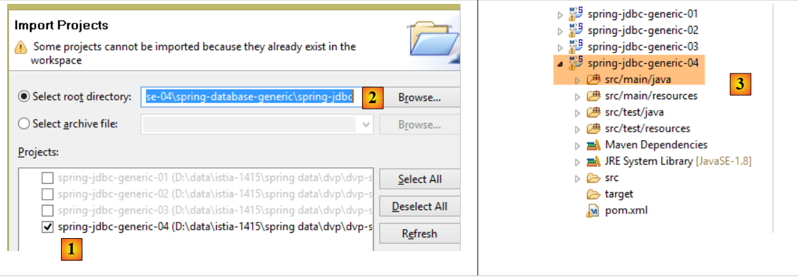
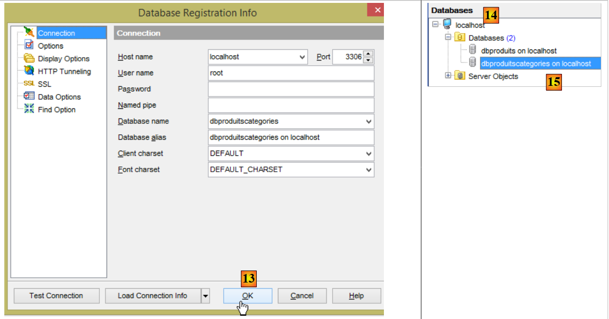
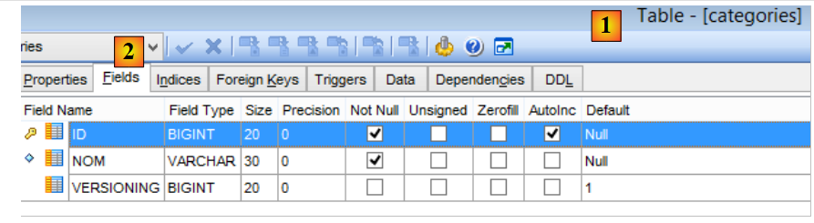
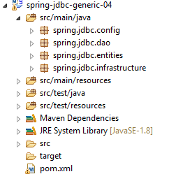
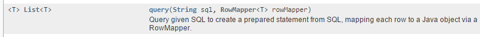
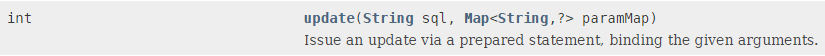
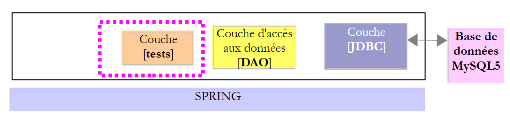
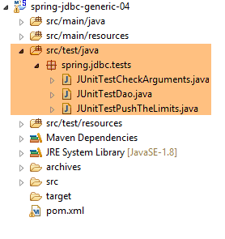
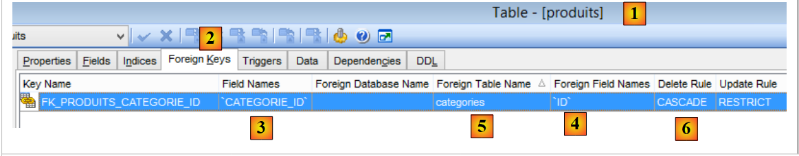

4. Introduction à Spring JDBC
Dans ce chapitre, nous allons étudier l'architecture suivante :
 |
C'est donc la même architecture que précédemment. Nous allons introduire deux modifications :
- la base de données aura deux tables liées par une relation de clé étrangère ;
- la couche [DAO] sera implémentée avec la bibliothèque [Spring JDBC] qui amène des facilités dans la gestion de l'API JDBC ;
4.1. Mise en place de l'environnement de travail
Avec STS, importez le projet [spring-jdbc-04] qui se trouve dans le dossier [<exemples>/spring-database-generic/spring-jdbc]
 |
Par ailleurs, il nous faut construire une nouvelle base de données MySQL avec le client [MyManager] (cf paragraphe 3.1) :
 |
- en [3], les exemples qui suivent travaillent sur une base MySQL s'appellant [dbproduitscategories] ;
 |
- en [9] mettre le mot de passe de l'utilisateur root (ce mot de passe est root dans ce document) ;
 |
 |
- en [18], la base [dbproduitscategories] a été créée vide. On crée des tables et on la remplit avec un script SQL [19-20] ;
 |
- en [21], positionnez-vous sur le dossier [<exemples>/spring-database-config/mysql/databases] ;
 |
- en [25], assurez-vous que vous êtes positionné sur la base [dbproduitscategories] et non la base [dbproduits] ;
- en [29], le script SQL a créé cinq tables. Les tables [ROLES, USERS, USERS_ROLES] ne seront utilisées que lorsqu'on abordera la sécurisation du service web construit pour exposer la base de données [dbproduitscategories] sur le web ;
4.2. La base de données [dbproduitscategories]
La base de données [dbproduitscategories] est une extension de la base [dbproduits] étudiée précédemment. Là où dans la table [PRODUITS] le produit avait une catégorie identifiée par un n° qui n'avait pas de signification particulière, ici ce n° sera une clé étrangère sur la table [CATEGORIES].
La table [PRODUITS] est la suivante :
 |
- [ID] : la clé primaire auto-incrémentée de la table [2] ;
- [NOM] : le nom unique du produit [4] ;
- [PRIX] : le prix du produit ;
- [DESCRIPTION] : la description du produit ;
- [VERSIONING] est le n° de version du produit. Sa version initiale est 1 [3]. A chaque fois que le produit sera modifié, son n° de version sera incrémenté par le code exploitant la table ;
- [CATEGORIE_ID] : la clé étrangère sur la table [CATEGORIES] pour désigner la catégorie à laquelle appartient le produit ;
 |
- en [1-3], la clé étrangère [CATEGORIE_ID] de la table [PRODUITS]. Elle cible la colonne [ID] de la table [CATEGORIES] [4-5] ;
- lorsqu'une catégorie est supprimée, tous les produits qui lui sont liés le sont également [6]. Ce point est important à noter car il est utilisé dans la construction de la couche [DAO] exploitant la base [dbproduitscategories] ;
La table [CATEGORIES] des catégories est la suivante :
 |
- [ID] : clé primair auto-incrémentée ;
- [VERSIONING] : n° de version de la catégorie ;
- [NOM] : nom unique de la catégorie ;
4.3. Le projet Eclipse
 |
Le projet [spring-jdbc-04] implémente l'architecture suivante :
 |
Le projet [spring-jdbc-04] est un projet Maven configuré par le fichier [pom.xml] suivant :
 |
<?xml version="1.0" encoding="UTF-8"?>
<project xmlns="http://maven.apache.org/POM/4.0.0" xmlns:xsi="http://www.w3.org/2001/XMLSchema-instance"
xsi:schemaLocation="http://maven.apache.org/POM/4.0.0 http://maven.apache.org/xsd/maven-4.0.0.xsd">
<modelVersion>4.0.0</modelVersion>
<groupId>dvp.spring.database</groupId>
<artifactId>spring-jdbc-generic-04</artifactId>
<version>0.0.1-SNAPSHOT</version>
<packaging>jar</packaging>
<name>spring-jdbc-generic-04</name>
<description>Demo project for Spring JdbcTemplate</description>
<parent>
<groupId>org.springframework.boot</groupId>
<artifactId>spring-boot-starter-parent</artifactId>
<version>1.2.3.RELEASE</version>
<relativePath /> <!-- lookup parent from repository -->
</parent>
<properties>
<project.build.sourceEncoding>UTF-8</project.build.sourceEncoding>
<java.version>1.8</java.version>
</properties>
<dependencies>
<!-- configuration JDBC du SGBD -->
<dependency>
<groupId>dvp.spring.database</groupId>
<artifactId>generic-config-jdbc</artifactId>
<version>0.0.1-SNAPSHOT</version>
</dependency>
<!-- Spring JdbcTemplate -->
<dependency>
<groupId>org.springframework.boot</groupId>
<artifactId>spring-boot-starter-jdbc</artifactId>
</dependency>
</dependencies>
<build>
<plugins>
<plugin>
<groupId>org.apache.maven.plugins</groupId>
<artifactId>maven-surefire-plugin</artifactId>
<version>2.18.1</version>
</plugin>
</plugins>
</build>
</project>
- lignes 28-32 : le projet s'appuie sur le projet [mysql-config-jdbc] qui configure la couche JDBC ;
- lignes 34-37 : l'artifact [spring-boot-starter-jdbc] amène les bibliothèques de Spring JDBC ;
Au final, les dépendances sont les suivantes :
 |
4.4. Configuration Spring
 |
La classe [AppConfig] qui configure le projet Spring est la suivante :
package spring.jdbc.config;
import generic.jdbc.config.ConfigJdbc;
import org.apache.tomcat.jdbc.pool.DataSource;
import org.springframework.context.annotation.Bean;
import org.springframework.context.annotation.ComponentScan;
import org.springframework.context.annotation.Configuration;
import org.springframework.context.annotation.Import;
import org.springframework.jdbc.core.namedparam.NamedParameterJdbcTemplate;
import org.springframework.jdbc.core.simple.SimpleJdbcInsert;
import org.springframework.jdbc.datasource.DataSourceTransactionManager;
import org.springframework.transaction.PlatformTransactionManager;
import org.springframework.transaction.annotation.EnableTransactionManagement;
@Configuration
@ComponentScan(basePackages = { "spring.jdbc.dao" })
@EnableTransactionManagement
@Import({ generic.jdbc.config.ConfigJdbc.class })
public class AppConfig {
// source de données
@Bean
public DataSource dataSource() {
// source de données TomcatJdbc
DataSource dataSource = new DataSource();
// configuration accès JDBC
dataSource.setDriverClassName(ConfigJdbc.DRIVER_CLASSNAME);
dataSource.setUsername(ConfigJdbc.USER_DBPRODUITSCATEGORIES);
dataSource.setPassword(ConfigJdbc.PASSWD_DBPRODUITSCATEGORIES);
dataSource.setUrl(ConfigJdbc.URL_DBPRODUITSCATEGORIES);
// connexions ouvertes initialement
dataSource.setInitialSize(5);
// résultat
return dataSource;
}
// Transaction manager
@Bean
public PlatformTransactionManager transactionManager(DataSource dataSource) {
return new DataSourceTransactionManager(dataSource);
}
// JdbcTemplate
@Bean
public NamedParameterJdbcTemplate namedParameterJdbcTemplate(DataSource dataSource) {
return new NamedParameterJdbcTemplate(dataSource);
}
// insertion produit
@Bean
public SimpleJdbcInsert simpleJdbcInsertProduit(DataSource dataSource) {
return new SimpleJdbcInsert(dataSource).withTableName(ConfigJdbc.TAB_PRODUITS).usingGeneratedKeyColumns(
ConfigJdbc.TAB_PRODUITS_ID);
}
// insertion catégorie
@Bean
public SimpleJdbcInsert simpleJdbcInsertCategorie(DataSource dataSource) {
return new SimpleJdbcInsert(dataSource).withTableName(ConfigJdbc.TAB_CATEGORIES).usingGeneratedKeyColumns(
ConfigJdbc.TAB_CATEGORIES_ID);
}
}
- ligne 16 : la classe est une classe de configuration Spring ;
- ligne 17 : le package [spring.jdbc.dao] sera scanné pour y chercher d'autres composants Spring que ceux présents dans la classe [AppConfig]. On y trouvera le composant implémentant la couche [DAO] ;
- ligne 18 : nous n'allons pas gérer les transactions nous-mêmes mais les laisser à la charge de Spring JDBC. La seule chose à faire sera d'annoter les méthodes devant s'exécuter dans une transaction avec l'annotation Spring [@Transactional]. La ligne 18 assure que cette annotation sera gérée et non ignorée. La gestion des transactions est assurée par une des dépendances du projet Spring JDBC importé par le fichier [pom.xml] ;
- ligne 19 : on importe les beans déjà définis dans la classe [generic.jdbc.config.ConfigJdbc] du projet [mysql-config-jdbc] ;
- lignes 23-36 : la source de données [tomcat-jdbc] introduite dans l'exemple [spring-jdbc-02] ;
- lignes 40-42 : le gestionnaire de transactions lié à la source de données définie précédemment. Le bean doit s'appeler impérativement [transactionManager] car c'est ce nom qui est exloité par l'annotation [@EnableTransactionManagement]. Le gestionnaire [DataSourceTransactionManager] est amené par la bibliothèque Spring JDBC (ligne 12) ;
- lignes 45-48 : le bean [namedParameterJdbcTemplate] sur lequel va reposer l'implémentation de la couche [DAO]. Ce bean est amené par la bibliothèque Spring JDBC (ligne 10). Ce bean est lui également lié à la source de données définie précédemment (ligne 47);
- lignes 51-55 : le bean [simpleJdbcInsertProduit] (nom libre) sera utilisé pour insérer un produit dans la table [PRODUITS] et récupérer la clé primaire générée. Les divers paramètres utilisés sont les suivants :
- [dataSource] : la source de données [tomcat-jdbc] des lignes 24-36 ;
- [ConfigJdbc.TAB_PRODUITS] : la table [PRODUITS] ;
- [ConfigJdbc.TAB_CATEGORIES_ID] : la colonne clé primaire de la table [PRODUITS]. On rappelle que pour PostgreSQL, le nom de cette colonne devra être en minuscules ;
- lignes 58-62 : le bean [simpleJdbcInsertCategorie] sera utilisé pour insérer une catégorie dans la table [CATEGORIES] et récupérer la clé primaire générée ;
4.5. Les exceptions du projet
 |
Nous avons déjà vu les classes [UncheckedException, DaoException, ShortException] dans le projet [spring-jdbc-03]. Nous en ajoutons une nouvelle :
package spring.jdbc.infrastructure;
public class MyIllegalArgumentException extends UncheckedException {
private static final long serialVersionUID = 1L;
// constructeurs
public MyIllegalArgumentException() {
super();
}
public MyIllegalArgumentException(int code, Throwable e, String className) {
super(code, e, className);
}
}
- la classe [MyIllegalArgumentException] dérive de la classe [UncheckedException] et est donc une classe non contrôlée. Elle sera utilisée pour signaler un appel avec des arguments incorrects d'une méthode de la couche [DAO]. On ne l'a pas appelée [IllegalArgumentException] parce que cette exception existe déjà dans le JDK et que cela entraînait parfois le compilateur à générer un [import] incorrect ;
4.6. Les entités du projet
 |
Les classes du package [spring.jdbc.entities] sont les images des lignes des tables de la base de données [dbproduitscategories]. Nous ignorerons pour l'instant, les images des tables [USERS, ROLES, USERS_ROLE].
Toutes les entités étendent la classe parent [AbstractCoreEntity] :
package spring.jdbc.entities;
public abstract class AbstractCoreEntity {
// propriétés
protected Long id;
protected Long version;
// constructeurs
public AbstractCoreEntity() {
}
public AbstractCoreEntity(Long id, Long version) {
this.id = id;
this.version = version;
}
public AbstractCoreEntity(AbstractCoreEntity entity) {
this.id = entity.id;
this.version = entity.version;
}
public void setAbstractCoreEntity(AbstractCoreEntity entity) {
this.id = entity.id;
this.version = entity.version;
}
// ------------------------------------------------------------
// redéfinition [equals] et [hashcode]
@Override
public int hashCode() {
return (id != null ? id.hashCode() : 0);
}
@Override
public boolean equals(Object entity) {
if (!(entity instanceof AbstractCoreEntity)) {
return false;
}
String class1 = this.getClass().getName();
String class2 = entity.getClass().getName();
if (!class2.equals(class1)) {
return false;
}
AbstractCoreEntity other = (AbstractCoreEntity) entity;
return id != null && other.id != null && id.equals(other.id);
}
// getters et setters
...
}
- ligne 5 : le champ [id] sera associé à la colonne [ID], clé primaire des tables ;
- ligne 6 : le champ [version] sera associé à la colonne [VERSIONING] des tables ;
- lignes 8-26 : différents constructeurs et méthodes pour construire ou initialiser un objet [AbstractCoreEntity] ;
- lignes 35-47 : la méthode [equals] dit que deux objets [AbstractCoreEntity] sont égaux s'ils ont le même champ [id]. Il faut se rappeler ici que les objets [AbstractCoreEntity] seront des images de lignes de tables où [id] est clé primaire et où il ne peut donc y avoir deux lignes avec le même [id] ;
- lignes 30-33 : une proposition de [hashCode] ;
La classe [Produit] sera l'image d'une ligne de la table [PRODUITS] :
package spring.jdbc.entities;
import com.fasterxml.jackson.annotation.JsonFilter;
@JsonFilter("jsonFilterProduit")
public class Produit extends AbstractCoreEntity {
// propriétés
private String nom;
private Long idCategorie;
private double prix;
private String description;
private Categorie categorie;
// constructeurs
public Produit() {
}
public Produit(Long id, Long version, String nom, Long idCategorie, double prix, String description,
Categorie categorie) {
super(id, version);
this.nom = nom;
this.idCategorie = idCategorie;
this.prix = prix;
this.description = description;
this.categorie = categorie;
}
// signature
public String toString() {
return String.format("[id=%s, version=%s, nom=%s, prix=10.2f, desc=%s, idCategorie=%s]", id, version, nom, prix,
description, idCategorie);
}
// getters et setters
...
}
- ligne 6 : la classe [Produit] étend la classe [AbstractCoreEntity] ;
- lignes 8-12 : les champs [id, version, nom, idCategorie, prix, description] sont les images des colonnes [ID, VERSIONING, NOM, CATEGORIE_ID, PRIX, DESCRIPTION] de la table [PRODUITS] ;
- ligne 12 : l'objet de type [Categorie] de clé primaire [idCategorie]. Ce champ sera ou non renseigné selon les cas. Lorsqu'il est renseigné, on parlera de produit version longue [LongProduit], sinon de produit version courte [ShortProduit] ;
- ligne 5 : un filtre jSON. On rappelle que le projet [mysql-config-jdbc] embarque une bibliothèque jSON. La nécssité du filtre vien du fait que le champ [categorie] peut être renseigné ou non. Dans ce cas, la représentation jSON du produit diffère. Pour gérer ces deux cas, on configurera le filtre [jsonFilterProduit] de la ligne 5. Un filtre jSON permet de préciser, de façon dynamique, les champs à exclure de la représentation jSON. Lorsqu'on saura que le champ [categorie] n'a pas été renseigné, on l'exclura de la représentation jSON du produit ;
La classe [Categorie] est l'image d'une ligne de la table [CATEGORIES] :
package spring.jdbc.entities;
import java.util.ArrayList;
import java.util.List;
import com.fasterxml.jackson.annotation.JsonFilter;
@JsonFilter("jsonFilterCategorie")
public class Categorie extends AbstractCoreEntity {
// propriétés
private String nom;
public List<Produit> produits;
// constructeurs
public Categorie() {
}
public Categorie(Long id, Long version, String nom, List<Produit> produits) {
super(id, version);
this.nom = nom;
this.produits = produits;
}
// signature
public String toString() {
return String.format("[id=%s, version=%s, nom=%s]", id, version, nom);
}
// méthodes
public void addProduit(Produit produit) {
// ajout d'un produit
if (produits == null) {
produits = new ArrayList<Produit>();
}
if (produit != null) {
// on ajoute le produit
produits.add(produit);
// on fixe sa catégorie
produit.setCategorie(this);
produit.setIdCategorie(this.id);
}
}
// getters et setters
...
}
- ligne 9 : la classe [Categorie] étend la classe [AbstractCoreEntity] ;
- ligne 12 : les champs [id, version, nom] sont les images des colonnes [ID, VERSIONING, NOM] de la table [CATEGORIES] ;
- ligne 13 : le champ [produits] représente la liste des produits de la catégorie. Ce champ n'est pas toujours renseigné. Lorsqu'il ne l'est pas, on parlera de catégorie version courte [ShortCategorie] sinon de catégorie version longue [LongCategorie] ;
- lignes 32-44 : la méthode [addProduit] permet d'ajouter un produit à la catégorie (ligne 39) et de fixer dans le produit ajouté, les caractéristiques de sa catégorie (idCategorie et categorie) ;
- ligne 8 : un filtre jSON. Lorsque la bibliothèque jSON devra sérialiser / désérialiser un objet [Categorie], on devra lui indiquer comment gérer le filtre nommé [jsonFilterCategorie] ;
4.7. L'interface Idao<T>
 |
 |
L'interface [IDao] de la couche [DAO] a la signature suivante :
package spring.jdbc.dao;
import java.util.List;
import spring.jdbc.entities.AbstractCoreEntity;
public interface IDao<T extends AbstractCoreEntity> {
// liste de tous les entités T
public List<T> getAllShortEntities();
public List<T> getAllLongEntities();
// des entités particulières - version courte
public List<T> getShortEntitiesById(Iterable<Long> ids);
public List<T> getShortEntitiesById(Long... ids);
public List<T> getShortEntitiesByName(Iterable<String> names);
public List<T> getShortEntitiesByName(String... names);
// des entités particulières - version longue
public List<T> getLongEntitiesById(Iterable<Long> ids);
public List<T> getLongEntitiesById(Long... ids);
public List<T> getLongEntitiesByName(Iterable<String> names);
public List<T> getLongEntitiesByName(String... names);
// mise à jour de plusieurs entités
public List<T> saveEntities(Iterable<T> entities);
public List<T> saveEntities(@SuppressWarnings("unchecked") T... entities);
// suppression de toutes les entités
public void deleteAllEntities();
// suppression de plusieurs entités
public void deleteEntitiesById(Iterable<Long> ids);
public void deleteEntitiesById(Long... ids);
public void deleteEntitiesByName(Iterable<String> names);
public void deleteEntitiesByName(String... names);
public void deleteEntitiesByEntity(Iterable<T> entities);
public void deleteEntitiesByEntity(@SuppressWarnings("unchecked") T... entities);
}
- ligne 7 : on a là une interface [IDao] paramétrée par un type T avec une condition : ce type doit étendre la classe [AbstractCoreEntity] ou implémenter l'interface [AbstractCoreEntity]. Le mot clé [extends] s'utilise pour les deux cas. Ici, T sera instancié soit par le type [Produit], soit par le type [Categorie]. En effet, on s'aperçoit assez vite qu'on fait le même type d'opérations (insertion, modification, suppression, sélection) sur les types [Produit] et [Categorie]. Il paraît alors logique de rassembler ces méthodes dans une interface générique ;
- selon les cas, les termes [LongEntity] et [ShortEntity] désignent des situations différentes :
- lorsque T est le type [Produit] :
- [ShortEntity] est le produit sans son champ [Categorie categorie] renseigné ;
- [LongEntity] est le produit avec son champ [Categorie categorie] renseigné ;
- lorsque T est le type [Categorie] :
- [ShortEntity] est la catégorie sans son champ [List<Produit> produits] renseigné ;
- [LongEntity] est le produit avec son champ [List<Produit> produits] renseigné ;
- lorsque T est le type [Produit] :
On a donc une interface riche de 19 méthodes. La plupart des méthodes existe en doublon. Prenons l'exemple de la méthode [getShortEntitiesById] :
public List<T> getShortEntitiesById(Iterable<Long> ids);
public List<T> getShortEntitiesById(Long... ids);
- lignes 1 et 3 : le paramètre est la liste des clés primaires des entités dont on veut la version courte. Cette liste est présentée sous deux formes différentes :
- ligne 1 : une liste implémentant l'interface [Iterable<Long>]. Le type [List<Long>] implémente cette interface mais il y en a beaucoup d'autres. Si on avait mis [List<Long> ids], cela aurait suffi pour nos exemples mais on obligeait l'utilisateur de nos exemples à faire des conversions si son paramètre n'était pas du type exact attendu ;
- ligne 3 : malheureusement le type Long[] n'implémente pas l'interface [Iterable<Long>]. Dans ce cas, on utilisera la version de la ligne 3. Le paramètre formel [Long... ids] (3 points) peut recevoir la valeur aussi bien d'un tableau que d'une suite d'ids : getShortEntitiesById(id1, id2, ...) ;
C'est cette même interface IDao<T> sera implémentée par l'architecture suivante :
 |
où une couche [JPA] (Java Persistence Api) viendra s'intercaler entre la couche [DAO] et le pilote JDBC du SGBD. Cela nous permettra d'avoir une couche de tests commune aux deux architectures. Dans les deux cas, la couche [DAO] présentera deux interfaces :
- IDao<Produit> pour accéder à la table [PRODUITS] ;
- IDao<Categorie> pour accéder à la table [CATEGORIES] ;
4.8. Implémentation de l'interface IDao<T>
|
- l'interface IDao<Produit> est implémentée par la classe [DaoProduit] ;
- l'interface IDao<Categorie> est implémentée par la classe [DaoCategorie] ;
Les classes [DaoProduit] et [DaoCategorie] étendent toutes deux la classe abstraite [AbstractDao] suivante :
package spring.jdbc.dao;
import java.util.ArrayList;
import java.util.List;
import org.springframework.beans.factory.annotation.Autowired;
import org.springframework.beans.factory.annotation.Qualifier;
import org.springframework.transaction.annotation.Transactional;
import spring.jdbc.entities.AbstractCoreEntity;
import spring.jdbc.infrastructure.MyIllegalArgumentException;
import com.google.common.collect.Lists;
public abstract class AbstractDao<T extends AbstractCoreEntity> implements IDao<T> {
// injections
@Autowired
@Qualifier("maxPreparedStatementParameters")
protected int maxPreparedStatementParameters;
// local
protected String simpleClassName = getClass().getSimpleName();
@Override
@Transactional(readOnly = true)
public List<T> getShortEntitiesById(Iterable<Long> ids) {
// validité de l'argument
List<T> entities = checkNullOrEmptyArgument(true, ids);
if (entities != null) {
return entities;
}
// obtention par tranches
entities = new ArrayList<T>();
int taille = maxPreparedStatementParameters;
List<Long> listIds = Lists.newArrayList(ids);
int nbIds = listIds.size();
for (int i = 0; i < nbIds; i += taille) {
int limit = Math.min(nbIds, i + taille);
entities.addAll(getShortEntitiesById(listIds.subList(i, limit)));
}
// résultat
return entities;
}
@Override
@Transactional(readOnly = true)
public List<T> getShortEntitiesById(Long... ids) {
// validité de l'argument
List<T> entities = checkNullOrEmptyArgument(true, ids);
if (entities != null) {
return entities;
}
// résultat
return getShortEntitiesById((Iterable<Long>) Lists.newArrayList(ids));
}
@Override
@Transactional(readOnly = true)
public List<T> getShortEntitiesByName(Iterable<String> names) {
...
}
@Override
@Transactional(readOnly = true)
public List<T> getShortEntitiesByName(String... names) {
...
}
@Override
@Transactional(readOnly = true)
public List<T> getLongEntitiesById(Iterable<Long> ids) {
...
}
@Override
@Transactional(readOnly = true)
public List<T> getLongEntitiesById(Long... ids) {
...
}
@Override
@Transactional(readOnly = true)
public List<T> getLongEntitiesByName(Iterable<String> names) {
...
}
@Override
@Transactional(readOnly = true)
public List<T> getLongEntitiesByName(String... names) {
...
}
@Override
@Transactional
public List<T> saveEntities(Iterable<T> entities) {
...
}
@Override
@Transactional
public List<T> saveEntities(@SuppressWarnings("unchecked") T... entities) {
...
}
@Override
public void deleteEntitiesById(Iterable<Long> ids) {
...
}
@Override
public void deleteEntitiesById(Long... ids) {
...
}
@Override
public void deleteEntitiesByName(Iterable<String> names) {
...
}
@Override
public void deleteEntitiesByName(String... names) {
...
}
@Override
public void deleteEntitiesByEntity(Iterable<T> entities) {
...
}
@Override
public void deleteEntitiesByEntity(@SuppressWarnings("unchecked") T... entities) {
...
}
protected void deleteEntitiesByEntity(List<T> entities) {
...
}
@Override
@Transactional(readOnly = true)
public abstract List<T> getAllShortEntities();
@Override
@Transactional(readOnly = true)
public abstract List<T> getAllLongEntities();
@Override
public abstract void deleteAllEntities();
// méthodes privées ----------------------------------------------
private <T2> List<T> checkNullOrEmptyArgument(boolean checkEmpty, Iterable<T2> elements) {
...
}
@SuppressWarnings("unchecked")
private <T2> List<T> checkNullOrEmptyArgument(boolean checkEmpty, T2... elements) {
...
}
// méthodes protégées ----------------------------------------------
abstract protected List<T> getShortEntitiesById(List<Long> ids);
abstract protected List<T> getShortEntitiesByName(List<String> names);
abstract protected List<T> getLongEntitiesById(List<Long> ids);
abstract protected List<T> getLongEntitiesByName(List<String> names);
abstract protected List<T> saveEntities(List<T> entities);
abstract protected void deleteEntitiesById(List<Long> ids);
abstract protected void deleteEntitiesByName(List<String> names);
}
- ligne 15 : la classe [AbstractDao] est abstraite (mot clé abstract). A ce titre, elle ne peut être instanciée. Elle ne peut qu'être dérivée. Cette classe a plusieurs rôles :
- fixer la nature de la transaction dans laquelle se déroule chaque méthode ;
- faire le maximum de choses communes aux deux implémentations des interfaces [IDao<Produit>] et [IDao<Categorie>]. Il s'agit principalement de vérifier la validité des arguments. On n'acceptera pas d'argument null, ni de listes vides ;
- uniformiser le type des paramètres T... params et Iterable<T> params en un seul : List<T> params ;
- déléguer le travail aux classes fille dès que cleui-ci devient spécifique à l'une des deux interfaces ;
Grâce à l'uniformisation des paramètres des différentes méthodes opéré par la classe [AbstractDao], les classes filles [DaoProduit] et [DaoCategorie] n'auront que 10 méthodes à implémenter au lieu de 19 :
// méthodes implémentées par les classes filles ----------------------------------------------
abstract protected List<T> getShortEntitiesById(List<Long> ids);
abstract protected List<T> getShortEntitiesByName(List<String> names);
abstract protected List<T> getLongEntitiesById(List<Long> ids);
abstract protected List<T> getLongEntitiesByName(List<String> names);
abstract protected List<T> saveEntities(List<T> entities);
abstract protected void deleteEntitiesById(List<Long> ids);
abstract protected void deleteEntitiesByName(List<String> names);
@Override
@Transactional(readOnly = true)
public abstract List<T> getAllShortEntities();
@Override
@Transactional(readOnly = true)
public abstract List<T> getAllLongEntities();
@Override
public abstract void deleteAllEntities();
Voyons quelques méthodes de la classe [AbstractDao].
Méthode [getShortEntitiesById]
Cette méthode vise à obtenir la version courte d'entités dont on donne les clés primaires.
// injections
@Autowired
@Qualifier("maxPreparedStatementParameters")
protected int maxPreparedStatementParameters;
// local
protected String simpleClassName = getClass().getSimpleName();
@Override
@Transactional(readOnly = true)
public List<T> getShortEntitiesById(Iterable<Long> ids) {
...
}
- lignes 2-4 : on injecte le bean [maxPreparedStatementParameters] défini dans le fichier de configuration [ConfigJdbc] qui configure la couche JDBC d'un SGBD particulier :
// nombre max de paramètres d'un [PreparedStatement]
public final static int MAX_PREPAREDSTATEMENT_PARAMETERS = 10000;
@Bean(name = "maxPreparedStatementParameters")
public int maxPreparedStatementParameters() {
return MAX_PREPAREDSTATEMENT_PARAMETERS;
}
- lignes 1-7 : définissent le bean [maxPreparedStatementParameters] qui va fixer le nombre maximum de paramètres ? qu'on pourra donner à un type [PreparedStatement]. Ce besoin n'est pas apparu avec le SGBD MySQL qui a accepté 10000 paramètres pour un type [PreparedStatement]. Lors des tests avec le SGBD SQL Server, celui-ci a jeté une exception indiquant que le nombre maximum de paramètres pour un type [PreparedStatement] était de 2100. Aussi ce nombre est-il devenu un paramètre de la configuration des différents SGBD. Il doit donc être placé dans le projet de configuration [sgbd-config-jdbc] de chaque SGBD ;
Revenons au code de la méthode [getShortEntitiesById] :
// injections
@Autowired
@Qualifier("maxPreparedStatementParameters")
protected int maxPreparedStatementParameters;
// local
protected String simpleClassName = getClass().getSimpleName();
@Override
@Transactional(readOnly = true)
public List<T> getShortEntitiesById(Iterable<Long> ids) {
...
}
- ligne 7 : le nom de la classe. Est utilisé comme paramètre d'un des constructeurs de la classe d'exception [DaoException] ;
- ligne 10 : l'annotation [@Transactional(readOnly = true)] indique que la méthode doit se dérouler dans une transaction en lecture seule. On peut s'interroger sur l'utilité d'une telle transaction dans la mesure où la méthode ne fait que des lectures et que donc en cas d'échec, il n'y a rien à annuler. C'est l'auteur de la bibliothèque [Spring Data] qui le conseille et explique pourquoi. J'ai suivi son conseil ;
Le corps de la méthode est le suivant :
@Override
@Transactional(readOnly = true)
public List<T> getShortEntitiesById(Iterable<Long> ids) {
// validité de l'argument
List<T> entities = checkNullOrEmptyArgument(true, ids);
if (entities != null) {
return entities;
}
...
}
- ligne 5 : la validité du paramètre [ids] est vérifiée par la méthode suivante :
private <T2> List<T> checkNullOrEmptyArgument(boolean checkEmpty, Iterable<T2> elements) {
// elements null ?
if (elements == null) {
throw new MyIllegalArgumentException(222, new NullPointerException("L'argument ne peut être null"), simpleClassName);
}
// elements vide ?
if (!elements.iterator().hasNext()) {
if (checkEmpty) {
throw new MyIllegalArgumentException(223, new RuntimeException("l'argument ne peut être une liste vide"),
simpleClassName);
} else {
return new ArrayList<T>();
}
}
// résultat par défaut
return null;
}
- ligne 1 : la méthode [checkNullOrEmptyArgument] est une méthode générique paramétrée par le type <T2>. T2 est le type des éléments passés en second paramètre de la méthode. Cela peut être [Long, String, AbstractCoreEntity] ;
- ligne 1 : la méthode [checkNullOrEmptyArgument] admet deux paramètres :
- [Iterable<T2> elements] : le paramètre à tester ;
- [checkEmpty] : à vrai si on doit tester que le paramètre précédent est une liste non vide ;
- lignes 4-6 : on vérifie que le paramètre [elements] est non null. Si ce n'est pas le cas, une exception de type [MyIllegalArgumentException] est lancée ;
- lignes 8-15 : si la liste est vide et qu'on devait vérifier qu'elle était non vide, on lance une exception de type [MyIllegalArgumentException] ;
- ligne 13 : si la liste est vide et qu'on ne devait pas vérifier qu'elle était non vide, alors on rend une liste vide d'éléments de type T. L'interface [Iterable<T2>] a une méthode [iterator()] qui permet d'itérer sur les éléments de la liste implémentant l'interface. Deux méthodes de cet itérateur sont utiles :
- [itérateur].hasNext() : rend vrai si la liste a encore un élément à exploiter, faux sinon ;
- [iterateur].next() : rend l'élément courant de la liste et avance d'un élément d'un élément ;
- au final,
- si l'argument [T2... elements] est null ou vide, une exception de type [MyIllegalArgumentException] est lancée ;
- si l'argument [T2... elements] est une liste vide et que c'était légal, alors on rend une liste vide d'éléments de type T ;
Une méthode analogue existe lorsque l'argument à tester est de type [T2... elements] :
@SuppressWarnings("unchecked")
private <T2> List<T> checkNullOrEmptyArgument(boolean checkEmpty, T2... elements) {
...
}
Revenons au code de la méthode [getShortEntitiesById] :
@Override
@Transactional(readOnly = true)
public List<T> getShortEntitiesById(Iterable<Long> ids) {
// validité de l'argument
List<T> entities = checkNullOrEmptyArgument(true, ids);
// obtention par tranches
entities = new ArrayList<T>();
int taille = maxPreparedStatementParameters;
List<Long> listIds = Lists.newArrayList(ids);
int nbIds = listIds.size();
for (int i = 0; i < nbIds; i += taille) {
int limit = Math.min(nbIds, i + taille);
entities.addAll(getShortEntitiesById(listIds.subList(i, limit)));
}
// résultat
return entities;
}
- ligne 7 : si on arrive là, c'est que l'argument [Iterable<Long> ids] est valide ;
- lignes 7-14 : nous allons voir ultérieurement que la méthode [getShortEntitiesById] va être implémentée par un type [PreparedStatement] qui aura pour paramètres la liste des clés primaires à chercher. Par exemple :
public final static String SELECT_SHORTCATEGORIE_BYID = "SELECT c.ID as c_ID, c.VERSIONING as c_VERSIONING, c.NOM as c_NOM FROM CATEGORIES c WHERE c.ID in (:ids)";
:ids est un paramètre qui aura pour valeur effective un type List<Long>. Chaque élément de cette liste va faire l'objet d'un paramètre ? dans un type [PreparedStatement]. Or nous avons dit que ce type acceptait un nombre maximal de paramètres, nombre fixé par le champ [maxPreparedStatementParameters] de la classe ;
- ligne 7 : la liste des entités T qui sera rendue par la méthode [getShortEntitiesById]. Cette liste va être construite par morceaux de [maxPreparedStatementParameters] éléments ;
- ligne 9 : à partir de l'argument [Iterable<Long> ids], on crée un type [List<Long> listIds]. La classe [Lists] est une classe de la bibliothèque Google Guava qui offre de nombreuses méthodes statiques pour manipuler des collections d'objets. La bibliothèque Google Guava a été importée (pom.xml) par le projet Maven [mysql-config-jdbc] :
<!-- Google Guava -->
<dependency>
<groupId>com.google.guava</groupId>
<artifactId>guava</artifactId>
<version>16.0.1</version>
</dependency>
- ligne 10 : le nombre d'entités T à rechercher dans la base ;
- lignes 11-13 : elles sont recherchées par groupe de [taille = maxPreparedStatementParameters] éléments ;
- ligne 12 : un calcul pour éviter de dépasser la fin de la liste [listIds] ;
- ligne 13 : les entités T sont obtenues par l'appel [getShortEntitiesById(listIds.subList(i, limit))]. Cette méthode est définie dans la classe par :
abstract protected List<T> getShortEntitiesById(List<Long> ids);
C'est donc la classe fille qui va aller rechercher les entités T dans la base :
- [DaoProduit] si T est le type [Produit] ;
- [DaoCategorie] si T est le type [Categorie] ;
L'intérêt de ce travail de la classe parent est double :
- la signature de la méthode [getShortEntitiesById] dans la classe fille est unique : son argument est de type [List<Long> ids] ;
- la classe fille n'a pas à s'occuper du problème des [maxPreparedStatementParameters] paramètres d'un [PreparedStatement]. Sa classe mère s'en est occupée pour elle ;
- ligne 13 : les entités ramenées par la classe fille sont cumulées dans la liste des entités qui sera rendue par la classe mère (ligne 16) ;
Maintenant, voyons l'implémentation de l'autre méthode [getShortEntitiesById] de la classe :
@Override
@Transactional(readOnly = true)
public List<T> getShortEntitiesById(Long... ids) {
// validité de l'argument
List<T> entities = checkNullOrEmptyArgument(true, ids);
// résultat
return getShortEntitiesById((Iterable<Long>) Lists.newArrayList(ids));
}
- ligne 3 : la nature de l'argument a changé : Long... ids ;
- ligne 5 : la validité de cet argument est testée ;
- ligne 7 : on appelle la méthode [getShortEntitiesById] que nous venons de décrire. Là encore, on s'aide de la classe [Lists] de la bibliothèque [Google Guava]. Notez qu'on est obligé de faire un cast explicite vers le type [Iterable<Long>] pour aider le compilateur à choisir la bonne méthode car la méthode [getShortEntitiesById] a trois signatures dans la classe :
- List<T> getShortEntitiesById(Long... ids) ;
- List<T> getShortEntitiesById(Iterable<Long> ids) ;
- List<T> getShortEntitiesById(List<Long> ids) qui est abstraite et implémentée par la classe fille ;
Nous ne commenterons pas davantage la classe abstraite [AbstractDao], classe parent des classes [DaoProduit] et [DaoCategorie]. On retiendra simplement qu'il est parfois intéressant de factoriser des comportements communs à plusieurs classes dans une classe parent abstraite ou non. Après ce travail, les classes filles n'ont plus que les méthodes suivantes à implémenter :
// méthodes implémentées par les classes filles ----------------------------------------------
abstract protected List<T> getShortEntitiesById(List<Long> ids);
abstract protected List<T> getShortEntitiesByName(List<String> names);
abstract protected List<T> getLongEntitiesById(List<Long> ids);
abstract protected List<T> getLongEntitiesByName(List<String> names);
abstract protected List<T> saveEntities(List<T> entities);
abstract protected void deleteEntitiesById(List<Long> ids);
abstract protected void deleteEntitiesByName(List<String> names);
@Override
@Transactional(readOnly = true)
public abstract List<T> getAllShortEntities();
@Override
@Transactional(readOnly = true)
public abstract List<T> getAllLongEntities();
@Override
public abstract void deleteAllEntities();
Le code de la paragraphe 4.8, montre les différents types de transaction utilisés pour chaque méthode. Notons quelques points :
- les méthodes qui lisent la base sont annotées avec [@Transactional(readOnly = true)] ;
- les méthodes qui modifient la base sont annotées avec [@Transactional] ;
- les méthodes [delete] ne sont pas annotées et ne se déroulent donc pas dans une transaction. L'idée est que si une suppression échoue, l'utilisateur ne veut sans doute pas annuler toutes celles qui ont réussi auparavant ;
4.9. La classe [DaoCategorie]
 |
|
La classe [DaoCategorie] implémente l'interface [IDao<Categorie>] qui assure l'accès aux données de la table [CATEGORIES] de la base MySQL [dbproduitscategories]. Son quelette est le suivant :
package spring.jdbc.dao;
import generic.jdbc.config.ConfigJdbc;
import java.sql.ResultSet;
import java.sql.SQLException;
import java.util.ArrayList;
import java.util.Collections;
import java.util.HashMap;
import java.util.List;
import java.util.Map;
import org.springframework.beans.factory.annotation.Autowired;
import org.springframework.jdbc.core.RowMapper;
import org.springframework.jdbc.core.namedparam.MapSqlParameterSource;
import org.springframework.jdbc.core.namedparam.NamedParameterJdbcTemplate;
import org.springframework.jdbc.core.namedparam.SqlParameterSource;
import org.springframework.jdbc.core.namedparam.SqlParameterSourceUtils;
import org.springframework.jdbc.core.simple.SimpleJdbcInsert;
import org.springframework.stereotype.Component;
import spring.jdbc.entities.Categorie;
import spring.jdbc.entities.Produit;
import spring.jdbc.infrastructure.DaoException;
import com.google.common.collect.Lists;
@Component
public class DaoCategorie extends AbstractDao<Categorie> {
// constantes
// injections
@Autowired
private NamedParameterJdbcTemplate namedParameterJdbcTemplate;
@Autowired
private SimpleJdbcInsert simpleJdbcInsertCategorie;
@Autowired
private IDao<Produit> daoProduit;
@Override
public List<Categorie> getAllShortEntities() {
...
}
@Override
public List<Categorie> getAllLongEntities() {
...
}
@Override
public void deleteAllEntities() {
...
}
@Override
protected List<Categorie> getShortEntitiesById(List<Long> ids) {
...
}
@Override
protected List<Categorie> getShortEntitiesByName(List<String> names) {
...
}
@Override
protected List<Categorie> getLongEntitiesById(List<Long> ids) {
...
}
@Override
protected List<Categorie> getLongEntitiesByName(List<String> names) {
...
}
@Override
protected List<Categorie> saveEntities(List<Categorie> entities) {
...
}
@Override
protected void deleteEntitiesById(List<Long> ids) {
...
}
@Override
protected void deleteEntitiesByName(List<String> names) {
...
}
...
}
// --------------------- mappers
class ShortCategorieMapper implements RowMapper<Categorie> {
....
}
class LongCategorieMapper implements RowMapper<Categorie> {
....
}
- ligne 28 : la classe [DaoCategorie] est un composant Spring et à ce titre pourra être injecté dans d'autres composants Spring ;
- ligne 29 : la classe [DaoCategorie] étend la classe abstraite [AbstractDao<Categorie>], ce qui en fait une implémentation de l'interface [IDao<Categorie>] ;
- lignes 34-37 : injection de beans définis dans la classe [AppConfig] décrite au paragraphe 4.4 ;
- lignes 38-39 : injection d'une référence sur la classe [DaoProduit] qui implémente l'interface [IDao<Produit>] qui gère l'accès aux données de la table [PRODUITS] ;
- lignes 41-89 : implémentation de l'interface [IDao<Categorie>] ;
- lignes 95-101 : deux classes internes implémentant l'interface [RowMapper<T>] ;
Etudions les méthodes les unes après les autres.
4.9.1. La méthode [getAllShortEntities]
La méthode [getAllShortEntities] ramène toutes les catégories de la table [CATEGORIES] dans leur version courte :
@Override
public List<Categorie> getAllShortEntities() {
try {
return namedParameterJdbcTemplate.query(ConfigJdbc.SELECT_ALLSHORTCATEGORIES, new ShortCategorieMapper());
} catch (Exception e) {
throw new DaoException(202, e, simpleClassName);
}
}
Toutes les méthodes reposent sur l'objet [namedParameterJdbcTemplate] défini dans le fichier de configuration Spring et fourni par la bibliothèque Spring JDBC. Ses méthodes sont nombreuses. Celle utilisée ci-dessus est la suivante :

- [sql] est l'ordre SQL à exécuter ;
- [rowMapper] est une instance de l'interface [RowMapper<T>] suivante :

L'idée est la suivante :
- la méthode [namedParameterJdbcTemplate].query(String sql, RowMapper<T> rowMapper) exécute l'ordre SQL de type [Select]. Elle gère les éventuelles exceptions, ainsi que l'ouverture / fermeture de la connexion vers le SGBD. La seule chose qu'elle ne puisse pas faire, c'est d'encapsuler les éléments du [ResultSet] des objets qu'elle obtient dans un type [Categorie] car elle ne connaît pas le lien qui existe entre les champs du type [Categorie] et les colonnes du [Resultset]. Nous verrons ultérieurement que ce lien est cré avec la technologie JPA ce qui rendra automatique l'encapsulation des éléments d'un [ResultSet] dans des instances de type T. Pour l'instant, le second paramètre de la méthode [query] est une instance de l'interface [RowMapper<T>] capable de faire cette encapsulation ;
Revenons au code :
@Override
public List<Categorie> getAllShortEntities() {
try {
return namedParameterJdbcTemplate.query(ConfigJdbc.SELECT_ALLSHORTCATEGORIES, new ShortCategorieMapper());
} catch (Exception e) {
throw new DaoException(202, e, simpleClassName);
}
}
L'ordre SQL [ConfigJdbc.SELECT_ALLSHORTCATEGORIES] est le suivant :
public final static String SELECT_ALLSHORTCATEGORIES = "SELECT c.ID as c_ID, c.VERSIONING as c_VERSIONING, c.NOM as c_NOM FROM CATEGORIES c";
La requête demande les colonnes [ID, VERSIONING, NOM] des éléments de la table [CATEGORIES]. Nous utiliserons systématiquement la syntaxe :
SELECT t1.COL1 as t1_COL1, t1.COL2 as t1_COL2 FROM TABLE1 t1, TABLE2 t2 WHERE ...
Ce qui est important, c'est le nommage des colonnes obtenues par le SELECT avec l'attribut [as nom_colonne]. C'est la seule façon d'être portable entre SGBD car ceux-ci ont tous une façon propriétaire de nommer les colonnes obtenus par un SELECT dans lequel des colonnes de tables différentes ont le même nom (ID, NOM ou VERSIONING par exemple dans notre cas). On lève alors cette ambiguïté en indiquant nous-mêmes le nom que ces colonnes doivent porter.
La classe interne [ShortCategorieMapper] est la suivante :
class ShortCategorieMapper implements RowMapper<Categorie> {
@Override
public Categorie mapRow(ResultSet rs, int rowNum) throws SQLException {
return new Categorie(rs.getLong("c_ID"), rs.getLong("c_VERSIONING"), rs.getString("c_NOM"), null);
}
}
- ligne 1 : la classe [ShortCategorieMapper] implémente l'interface [RowMapper<Categorie>] et à ce titre doit implémenter la méthode [mapRow] des lignes 4-5 dont le rôle est d'encapsuler une ligne du [ResultSet rs] produit par l'ordre [SELECT] dans un type [Categorie] ;
- ligne 5 : cette encapsulation est faite. On notera bien que le nom utilisé par les méthodes [rs.getType(nom)] est le nom utilisé dans les attributs [as nom] des colonnes du SELECT ;
On a donc obtenu la liste des catégories dans leur version courte sans gérer d'exceptions ni de connexion. C'est l'intérêt de la bibliothèque Spring JDBC qui gère tout ce qui peut être factorisé dans la gestion des éléments d'une table et laisse au développeur ce qui ne peut l'être.
4.9.2. La méthode [getAllLongEntities]
La méthode [getAllLongEntities] ramène toutes les catégories de la table [CATEGORIES] dans leur version longue :
@Override
public List<Categorie> getAllLongEntities() {
try {
return filterCategories(namedParameterJdbcTemplate.query(ConfigJdbc.SELECT_ALLLONGCATEGORIES,
new LongCategorieMapper()));
} catch (Exception e) {
throw new DaoException(223, e, simpleClassName);
}
}
L'ordre SQL [ConfigJdbc.SELECT_ALLLONGCATEGORIES] est le suivant :
public final static String SELECT_ALLLONGCATEGORIES = "SELECT p.ID as p_ID, p.VERSIONING as p_VERSION, p.NOM as p_NOM, p.PRIX as p_PRIX, p.DESCRIPTION as p_DESCRIPTION, p.CATEGORIE_ID AS p_CATEGORIE_ID, c.ID as c_ID, c.NOM as c_NOM, c.VERSIONING as c_VERSION FROM PRODUITS p RIGHT JOIN CATEGORIES c ON p.CATEGORIE_ID=c.ID";
Il s'agit de ramener les catégories avec leurs produits. Ceci est obtenu en faisant une jointure de la table [CATEGORIES] avec la table [PRODUITS] via la clé étrangère [CATEGORIE_ID] qu'a la table [PRODUITS] vers la table [CATEGORIES]. La syntaxe [FROM PRODUITS p RIGHT JOIN CATEGORIES c ON p.CATEGORIE_ID=c.ID] permet de ramener également les catégories n'ayant pas de produits associés. Dans ce cas, la requête SELECT ramène une catégorie et un produit ayant toutes ses colonnes à NULL.
La classe [LongCategorieMapper] est la suivante :
class LongCategorieMapper implements RowMapper<Categorie> {
@Override
public Categorie mapRow(ResultSet rs, int rowNum) throws SQLException {
Categorie categorie = new Categorie(rs.getLong("c_ID"), rs.getLong("c_VERSION"), rs.getString("c_NOM"), null);
List<Produit> produits = new ArrayList<Produit>();
long idProduit = rs.getLong("p_ID");
// cas de la catégorie sans produits
if (!rs.wasNull()) {
produits.add(new Produit(idProduit, rs.getLong("p_VERSION"), rs.getString("p_NOM"), rs.getLong("p_CATEGORIE_ID"),
rs.getDouble("p_PRIX"), rs.getString("p_DESCRIPTION"), categorie));
}
categorie.setProduits(produits);
return categorie;
}
}
- ligne 4 : la méthode [mapRow] doit rendre un objet [Categorie] avec son champ [produits] renseigné, ceci à partir d'une ligne du [ResultSet] issu de l'ordre SELECT précédent ;
Au final, l'opération :
[namedParameterJdbcTemplate.query(ConfigJdbc.SELECT_ALLLONGCATEGORIES,new LongCategorieMapper())]
va rendre une liste du type :
où chaque catégorie [ci] aura un champ [produits] qui sera une liste de produits contenant un seul élément [produitsij]. Or, nous il nous faut la liste suivante :
où chaque catégorie [ci] aura un champ [produits] qui sera la liste des produits [produiti1, produiti2, ...]. Cela est obtenu en passant la liste des catégories obtenue à une méthode privée [filterCategories] :
@Override
public List<Categorie> getAllLongEntities() {
try {
return filterCategories(namedParameterJdbcTemplate.query(ConfigJdbc.SELECT_ALLLONGCATEGORIES,
new LongCategorieMapper()));
} catch (Exception e) {
throw new DaoException(223, e, simpleClassName);
}
}
La méthode [filterCategories] est la suivante :
private List<Categorie> filterCategories(List<Categorie> categories) {
if (categories.size() == 0) {
return categories;
}
// catégories à rendre
List<Categorie> cats = new ArrayList<Categorie>();
// on parcourt la liste des catégories obtenues
for (Categorie categorie : categories) {
boolean trouve = false;
for (Categorie cat : cats) {
if (categorie.equals(cat)) {
cat.addProduit(categorie.getProduits().get(0));
trouve = true;
break;
}
}
// trouvé ?
if (!trouve) {
cats.add(categorie);
}
}
// résultat
return cats;
}
- ligne 1 : [List<Categorie> categories] est la liste des catégories à filtrer (ou à regrouper) ;
- ligne 6 : la liste des catégories à renvoyer à l'appelant ;
- lignes 8-21 : on traite chaque catégorie de la liste à filtrer ;
- lignes 10-16 : on cherche si la catégorie courante [categorie] est déjà présente dans la liste des catégories [cats] à construire (on rappelle que deux catégories sont dites égales si elles ont la même clé primaire, cf pararaphe 4.6) ;
- lignes 11-14 : si c'est déjà le cas, alors le produit encapsulé dans [categorie] est ajouté à la liste des produits de [cat] ;
- lignes 18-20 : si si la catégorie courante [categorie] n'est pas déjà présente dans la liste des catégories [cats] à construire, alors on l'y ajoute avec sa liste de produits qui contient un unique élément ;
Regardons le cas où l'ordre SQL Select ramène des catégories sans produits associés. Quelle entité rend la classe [LongCategorieMapper] ?
class LongCategorieMapper implements RowMapper<Categorie> {
@Override
public Categorie mapRow(ResultSet rs, int rowNum) throws SQLException {
Categorie categorie = new Categorie(rs.getLong("c_ID"), rs.getLong("c_VERSION"), rs.getString("c_NOM"), null);
List<Produit> produits = new ArrayList<Produit>();
long idProduit = rs.getLong("p_ID");
// cas de la catégorie sans produits
if (!rs.wasNull()) {
produits.add(new Produit(idProduit, rs.getLong("p_VERSION"), rs.getString("p_NOM"), rs.getLong("p_CATEGORIE_ID"),
rs.getDouble("p_PRIX"), rs.getString("p_DESCRIPTION"), categorie));
}
categorie.setProduits(produits);
return categorie;
}
}
Dans le cas où l'ordre SQL Select a ramené une catégorie sans produits, les colonnes du produit ramené avec la catégorie contiennent toutes la valeur SQL NULL. Ce cas est traité lignes 7-9 :
- ligne 7 : on récupère la clé primaire du produit en temps qu'entier long ;
- ligne 9 : on regarde si la valeur lue était la valeur SQL NULL (rs.wasNull). Si ce n'est pas le cas, on ajoute le produit à la liste de la ligne 6, sinon rien n'est ajouté et la liste de produits reste vide.
On notera que dans tous les cas, on rend une catégorie avec un champ [produits] qui est non null.
4.9.3. La méthode [getShortEntitiesById]
La méthode [getShortEntitiesById] est analogue à la méthode [getAllShortEntities] si ce n'est qu'elle ne ramène que les entités dont les clés primaires sont précisées dans une liste :
@Override
protected List<Categorie> getShortEntitiesById(List<Long> ids) {
try {
return namedParameterJdbcTemplate.query(ConfigJdbc.SELECT_SHORTCATEGORIE_BYID,
Collections.singletonMap("ids", ids), new ShortCategorieMapper());
} catch (Exception e) {
throw new DaoException(203, e, simpleClassName);
}
}
- ligne 4, la signature de la méthode [query] utilisée est la suivante :

Le 1er paramètre est un ordre SQL [Select] paramétré. Le second est un dictionnaire associant chacun des paramètres à une valeur. Le 3ième est l'instance de la classe qui réalise l'encapsulation d'une ligne du [ResultSet] résultat du [Select] dans un objet de type T ;
- ligne 4 : l'ordre SQL [Select] paramétré est le suivant :
public final static String SELECT_SHORTCATEGORIE_BYID = "SELECT c.ID as c_ID, c.VERSIONING as c_VERSIONING, c.NOM as c_NOM FROM CATEGORIES c WHERE c.ID in (:ids)";
Cet ordre extrait de la table [CATEGORIES] les catégories dont les clés primaires sont dans la liste :ids.
- ligne 5 : le second paramètre de la méthode [query] est ici un dictionnaire associant la clé 'ids' (1er paramètre) à la liste [ids] passée ligne 1 en paramètre à la méthode [getShortEntitiesById]. La classe [Collections] appartient à la bibliothèque [Google Guava] dont nous avons déjà parlée. [Collections.singleMap] rend un dictionnaire d'un élément ;
- ligne 5 : la classe chargée de faire l'encapsulation d'une ligne du [ResultSet] résultat du [Select] dans un objet de type [Categorie] est la classe [ShortCategorieMapper] déjà étudiée ;
C'est typiquement ici qu'intervient le bean [maxPreparedStatementParameters]. En effet, le paramètre [:ids] de l'ordre SQL qui représente une liste de clés primaires peut contenir de 1 à plusieurs milliers de paramètres. Il y a une limite à ce nombre qui dépend de chaque SGBD. Pour MySQL, on a pu passer 10000 paramètres sans erreur et on n'a pas testé au-delà. Pour SQL Server la limite officielle est 2100. Pour Firebird, 1000 était trop. On est descendu à 100. De manière générale, on n'a pas testé la limite maximale de ce nombre pour les différents SGBD.
4.9.4. La méthode [getLongEntitiesById]
La méthode [getLongEntitiesById] est analogue à la méthode [getShortEntitiesById] si ce n'est qu'elle ramène les versions longues des catégories :
@Override
protected List<Categorie> getLongEntitiesById(List<Long> ids) {
try {
return filterCategories(namedParameterJdbcTemplate.query(ConfigJdbc.SELECT_LONGCATEGORIE_BYID,
Collections.singletonMap("ids", ids), new LongCategorieMapper()));
} catch (Exception e) {
throw new DaoException(205, e, simpleClassName);
}
}
Ligne 4, la requête SQL [ConfigJdbc.SELECT_LONGCATEGORIE_BYID] est la suivante :
public final static String SELECT_LONGCATEGORIE_BYID = "SELECT p.ID as p_ID, p.VERSIONING as p_VERSION, p.NOM as p_NOM, p.PRIX as p_PRIX, p.DESCRIPTION as p_DESCRIPTION, p.CATEGORIE_ID AS p_CATEGORIE_ID, c.ID as c_ID, c.NOM as c_NOM, c.VERSIONING as c_VERSION FROM PRODUITS p RIGHT JOIN CATEGORIES c ON c.ID=p.CATEGORIE_ID WHERE c.ID in (:ids)";
4.9.5. La méthode [getShortEntitiesByName]
La méthode [getShortEntitiesByName] est analogue à la méthode [getShortEntitiesById] si ce n'est que les catégories sont cherchées via leurs noms plutôt que via leurs clés primaires :
@Override
protected List<Categorie> getShortEntitiesByName(List<String> names) {
try {
return namedParameterJdbcTemplate.query(ConfigJdbc.SELECT_SHORTCATEGORIE_BYNAME,
Collections.singletonMap("noms", names), new ShortCategorieMapper());
} catch (Exception e) {
throw new DaoException(204, e, simpleClassName);
}
}
Ligne 4, l'ordre SQL [ConfigJdbc.SELECT_SHORTCATEGORIE_BYNAME] est le suivant :
public final static String SELECT_SHORTCATEGORIE_BYNAME = "SELECT c.ID as c_ID, c.VERSIONING as c_VERSIONING, c.NOM as c_NOM FROM CATEGORIES c WHERE c.NOM in (:noms)";
4.9.6. La méthode [getLongEntitiesByName]
La méthode [getLongEntitiesByName] est analogue à la méthode [getShortEntitiesByName] si ce n'est que les catégories sont cherchées dans leurs versions longues :
@Override
protected List<Categorie> getLongEntitiesByName(List<String> names) {
try {
return filterCategories(namedParameterJdbcTemplate.query(ConfigJdbc.SELECT_LONGCATEGORIE_BYNAME,
Collections.singletonMap("noms", names), new LongCategorieMapper()));
} catch (Exception e) {
throw new DaoException(215, e, simpleClassName);
}
}
Ligne 4, l'ordre SQL [ConfigJdbc.SELECT_LONGCATEGORIE_BYNAME] est le suivant :
public final static String SELECT_LONGCATEGORIE_BYNAME = "SELECT p.ID as p_ID, p.VERSIONING as p_VERSION, p.NOM as p_NOM, p.PRIX as p_PRIX, p.DESCRIPTION as p_DESCRIPTION, p.CATEGORIE_ID AS p_CATEGORIE_ID, c.ID as c_ID, c.NOM as c_NOM, c.VERSIONING as c_VERSION FROM PRODUITS p RIGHT JOIN CATEGORIES c ON c.ID=p.CATEGORIE_ID WHERE c.NOM in(:noms)";
4.9.7. La méthode [deleteAllEntities]
La méthode [deleteAllEntities] supprime toutes les catégories de la table [CATEGORIES] :
@Override
public void deleteAllEntities() {
try {
// on supprime toutes les catégories et par cascade tous les produits
namedParameterJdbcTemplate.update(ConfigJdbc.DELETE_ALLCATEGORIES, (Map<String, Object>) null);
} catch (Exception e) {
throw new DaoException(208, e, simpleClassName);
}
}
- ligne 4 : la méthode [namedParameterJdbcTemplate.update] utilisée a la signature suivante :

Le 1er paramètre est un ordre SQL paramétré de mise à jour (INSERT, UPDATE, DELETE). Le second paramètre est le dictionnaire associant des valeurs aux différents paramètres de l'ordre SQL. La méthode rend le nombre de lignes mises à jour par l'ordre SQL.
- ligne 4 : l'ordre SQL [ConfigJdbc.DELETE_ALLCATEGORIES] est le suivant :
public final static String DELETE_ALLCATEGORIES = "DELETE FROM CATEGORIES";
Ce n'est donc pas un ordre paramétré. C'est pourquoi, le second paramètre de la méthode [update] a la valeur null.
4.9.8. La méthode [deleteAllEntitiesById]
La méthode [deleteAllEntitiesById] supprime les catégories de la table [CATEGORIES] dont on passe les clés primaires :
@Override
protected void deleteEntitiesById(List<Long> ids) {
try {
namedParameterJdbcTemplate.update(ConfigJdbc.DELETE_CATEGORIESBYID, Collections.singletonMap("ids", ids));
} catch (Exception e) {
throw new DaoException(209, e, simpleClassName);
}
}
Ligne 4, l'ordre SQL [ConfigJdbc.DELETE_CATEGORIESBYID] est le suivant :
public final static String DELETE_CATEGORIESBYID = "DELETE FROM CATEGORIES WHERE ID in (:ids)";
4.9.9. La méthode [deleteAllEntitiesByName]
La méthode [deleteAllEntitiesByName] supprime les catégories de la table [CATEGORIES] dont on passe les noms :
@Override
protected void deleteEntitiesByName(List<String> names) {
try {
namedParameterJdbcTemplate.update(ConfigJdbc.DELETE_CATEGORIESBYNAME, Collections.singletonMap("noms", names));
} catch (Exception e) {
throw new DaoException(225, e, simpleClassName);
}
}
Ligne 4, l'ordre SQL [ConfigJdbc.DELETE_CATEGORIESBYNAME] est le suivant :
public final static String DELETE_CATEGORIESBYNAME = "DELETE FROM CATEGORIES WHERE NOM in (:noms)";
4.9.10. La méthode [saveEntities]
4.9.10.1. Le code
La signature de cette méthode est la suivante :
@Override
protected List<Categorie> saveEntities(List<Categorie> entities) {
La méthode reçoit en paramètre une liste de catégories. Elle fait les opérations suivantes dessus :
- si la catégorie a une clé primaire null une opération SQL INSERT est faite sinon une opération SQL UPDATE est faite ;
- cette opération est répétée pour chacun des produits de la catégorie ;
La méthode rend la liste des catégories persistées ou mises à jour. La liste rendue est l'image exacte des catégories et produits présents en tables aux versions près : celles-ci ne sont en effet pas modifiées dans les entités mises à jour alors même qu'elles ont été incrémentées en base.
C'est de loin la méthode la plus complexe. Son code est le suivant :
@Override
protected List<Categorie> saveEntities(List<Categorie> entities) {
try {
// --------------------------------------------- categories
List<Categorie> insertCategories = new ArrayList<Categorie>();
List<Categorie> updateCategories = new ArrayList<Categorie>();
// on scanne les catégories
for (Categorie categorie : entities) {
// insert or update ?
if (categorie.getId() == null) {
insertCategories.add(categorie);
} else {
updateCategories.add(categorie);
}
}
// insertions catégories
if (insertCategories.size() > 0) {
insertCategories(insertCategories);
}
// updates categories
if (updateCategories.size() > 0) {
updateCategories(updateCategories);
}
// --------------------------------------------- produits
// on met à jour les produits des catégories
List<Produit> allProduits = new ArrayList<Produit>();
for (Categorie categorie : entities) {
List<Produit> produits = categorie.getProduits();
Long idCategorie = categorie.getId();
if (produits != null) {
// on l'ajoute à la liste de tous les produits
allProduits.addAll(produits);
// on scanne les produits un à un pour les relier à leur catégorie
for (Produit produit : produits) {
// on relie le produit à sa catégorie
produit.setIdCategorie(idCategorie);
produit.setCategorie(categorie);
}
}
}
// insert / update des produits
daoProduit.saveEntities(allProduits);
// résultat
return entities;
} catch (DaoException e) {
throw e;
} catch (Exception e) {
throw new DaoException(207, e, simpleClassName);
}
}
- lignes 5-23 : insertion ou mise à jour des catégories ;
- lignes 26-43 : insertion ou mise à jour des produits ;
- lignes 35-39 : ce code relie chaque produit à sa catégorie. Dans la phase précédente d'insertion des catégories, celles-ci ont reçu une clé primaire qu'il faut mettre dans le champ [idCategorie] du produit (ligne 37). Par ailleurs, les lignes 37-38 permettent de corriger les situations où l'appelant n'a pas relié correctement chaque produit à sa catégorie. Pour que cette relation soit correcte, il faut utiliser la méthode [Categorie] .add(Produit p) mais rien n'empêche un utilisateur d'ajouter un produit directement à la liste des produits de la catégorie sans passer par cette méthode au risque d'avoir les champs [idCategorie, categorie] du produit p mal renseignés ;
- ligne 43 : on délègue à l'instance de l'interface [IDao<Produit>] le soin de persister / mettre à jour les produits. On rappelle que cette instance a été injectée dans la classe [DaoCategorie] :
@Autowired
private IDao<Produit> daoProduit;
4.9.10.2. Insertion des catégories
Les catégories sont insérées dans la table [CATEGORIES] par la méthode privée [insertCategories] suivante :
private List<Categorie> insertCategories(List<Categorie> categories) {
Map<Long, Categorie> mapCategories=new HashMap<Long,Categorie>();
try {
// catégories à ajouter
for (Categorie categorie : categories) {
Number newId = simpleJdbcInsertCategorie.executeAndReturnKey(getMapForCategorie(categorie));
// on mémorise la clé primaire
mapCategories.put(newId.longValue(), categorie);
}
} catch (Exception e) {
throw new DaoException(201, e, simpleClassName);
}
// tout est OK - on affecte les clés primaires aux catégories persistées
for(Long id : mapCategories.keySet()){
Categorie categorie=mapCategories.get(id);
categorie.setId(id);
}
// résultat
return categories;
}
- ligne 6 : on utilise le bean [simpleJdbcInsertCategorie] injectée dans la classe par les lignes suivantes :
@Autowired
private SimpleJdbcInsert simpleJdbcInsertCategorie;
Ce bean est défini dans la classe [AppConfig] du projet de la façon suivante :
import org.springframework.jdbc.core.simple.SimpleJdbcInsert;
@Bean
public SimpleJdbcInsert simpleJdbcInsertCategorie(DataSource dataSource) {
return new SimpleJdbcInsert(dataSource).withTableName(ConfigJdbc.TAB_CATEGORIES)
.usingGeneratedKeyColumns(ConfigJdbc.TAB_CATEGORIES_ID)
.usingColumns(ConfigJdbc.TAB_CATEGORIES_NOM);
}
- ligne 5, la classe [SimpleJdbcInsert] est une classe de la bibliothèque Spring JDBC (ligne 1) :
- le paramètre du constructeur [SimpleJdbcInsert] est la source de données sur laquelle on opère ;
- la clause [withTableName] permet d'indiquer la table dans laquelle on veut insérer un élément, ici table [CATEGORIES] ;
- la clause [usingGeneratedKeyColumns] permet de préciser la colonne de la clé primaire auto-générée, ici la colonne [ID] ;
- la clause [usingColumns] permet de restreindre l'insertion à certaines colonnes. Ici on exclut la colonne [ID] qui est auto-générée par le SGBD et la colonne [VERSIONING] qui a une valeur par défaut à 1 ;
Revenons au code de la méthode [insertCategories] :
private List<Categorie> insertCategories(List<Categorie> categories) {
Map<Long, Categorie> mapCategories=new HashMap<Long,Categorie>();
try {
// catégories à ajouter
for (Categorie categorie : categories) {
Number newId = simpleJdbcInsertCategorie.executeAndReturnKey(getMapForCategorie(categorie));
// on mémorise la clé primaire
mapCategories.put(newId.longValue(), categorie);
}
} catch (Exception e) {
throw new DaoException(201, e, simpleClassName);
}
// tout est OK - on affecte les clés primaires aux catégories persistées
for(Long id : mapCategories.keySet()){
Categorie categorie=mapCategories.get(id);
categorie.setId(id);
}
// résultat
return categories;
}
- ligne 6 : la méthode [simpleJdbcInsertCategorie.executeAndReturnKey] est utilisée :

La méthode attend comme paramètre un dictionnaire faisant les liens entre colonnes de la table et valeurs à insérer dans celles-ci. Elle rend comme résultat la clé primaire sous la forme d'un type [Number]. La méthode [Number.longValue()] permet d'obtenir la clé primaire sous la forme d'un type [Long].
La méthode [getMapForCategorie] est la méthode privée suivante :
private Map<String, ?> getMapForCategorie(Categorie categorie) {
Map<String, Object> map = new HashMap<String, Object>();
map.put(ConfigJdbc.TAB_CATEGORIES_NOM, categorie.getNom());
return map;
}
Les clés du dictionnaire sont les noms des colonnes à renseigner [NOM], et les valeurs du dictionnaire sont les valeurs à insérer dans ces colonnes.
- ligne 8 [insertCategories] : la clé primaire récupérée est mémorisée dans un dictionnaire. On va attendre d'être sûr que toutes les entités ont été insérées avant de leur affecter leurs clés primaires. En effet, en cas d'exception, toutes les insertions vont être annulées et on veut qu'alors les entités [categories] de la ligne 1 restent elles aussi inchangées ;
- lignes 14-17 : maintenant qu'on est sûr que tout s'est bien passé, on affecte les clés primaires générées aux catégories ;
- ligne 19 : on rend la liste des catégories avec leurs clés primaires ;
4.9.10.3. Mise à jour des catégories
Les catégories sont mises à jour avec la méthode privée [updateCategories] suivante :
private void updateCategories(List<Categorie> categories) {
try {
for (Categorie categorie : categories) {
// mise à jour de la catégorie en base
int nbLignes = namedParameterJdbcTemplate.update(ConfigJdbc.UPDATE_CATEGORIES,
new BeanPropertySqlParameterSource(categorie));
// a-t-on réussi ?
Long idCategorie = null;
if (nbLignes == 0) {
// on n'a pas réussi - on cherche pourquoi
// on recherche la catégorie en base
idCategorie = categorie.getId();
List<Categorie> categoriesInBd = getShortEntitiesById(idCategorie);
if (categoriesInBd.size() == 0) {
// la catégorie n'existe pas
throw new RuntimeException(String.format("Erreur de mise à jour. La catégorie de clé [%s] n'existe pas",
idCategorie));
} else {
// la version n'était pas bonne
throw new RuntimeException(String.format(
"Erreur de mise à jour. La catégorie de clé [%s] n'a pas la bonne version", idCategorie));
}
}
}
} catch (DaoException e) {
throw e;
} catch (Exception e) {
throw new DaoException(206, e, simpleClassName);
}
}
La mise à jour d'une catégorie C1 en base par une catégorie C2 en mémoire n'est autorisée que si les catégories C1 et C2 ont la même version. Ce n° de version sert à empêcher la mise à jour simultanée de l'entité par deux utilisateurs différents : deux utilisateurs U1 et U2 lisent l'entité E avec un n° de version égal à V1. U1 modifie E et persiste cette modification en base : le n° de version passe alors à V1+1. U2 modifie E à son tour et persiste cette modification en base : il recevra une exception car il possède une version (V1) différente de celle en base (V1+1).
- lignes 2-29 : le try a deux catch :
- le premier, ligne 25, est là pour laisser passer l'éventuelle exception de type [DaoException] lancée par le code de la ligne 13 ;
- le second, ligne 27, est là pour gérer les autres types d'exception ;
- ligne 3 : on scanne toutes les catégories à mettre à jour ;
- ligne 4 : on met à jour la catégorie courante avec la méthode [namedParameterJdbcTemplate.update] :

- analysons l'instruction :
int nbLignes = namedParameterJdbcTemplate.update(ConfigJdbc.UPDATE_CATEGORIES, new BeanPropertySqlParameterSource(categorie));
L'ordre SQL [ConfigJdbc.UPDATE_CATEGORIES] est le suivant :
public final static String UPDATE_CATEGORIES = "UPDATE CATEGORIES SET VERSIONING=VERSIONING+1, NOM=:nom WHERE ID=:id AND VERSIONING=:version";
L'ordre a trois paramètres (:id, :version, :nom) dont les valeurs sont dans les champs de mêmes nom de l'objet [categorie] modifié. On utilise cette particularité en passant comme second paramètre [new BeanPropertySqlParameterSource(categorie)] qui dit " les valeurs des paramètres sont dans les champs de mêmes noms de ce Java bean " ;
Le résultat rendu par cette opération, lorsqu'elle se passe normalement, est le nombre de lignes modifiées donc 0 ou 1.
Revenons au code étudié :
private void updateCategories(List<Categorie> categories) {
try {
for (Categorie categorie : categories) {
// mise à jour de la catégorie en base
int nbLignes = namedParameterJdbcTemplate.update(ConfigJdbc.UPDATE_CATEGORIES,
new BeanPropertySqlParameterSource(categorie));
// a-t-on réussi ?
Long idCategorie = null;
if (nbLignes == 0) {
// on n'a pas réussi - on cherche pourquoi
// on recherche la catégorie en base
idCategorie = categorie.getId();
List<Categorie> categoriesInBd = getShortEntitiesById(idCategorie);
if (categoriesInBd.size() == 0) {
// la catégorie n'existe pas
throw new RuntimeException(String.format("Erreur de mise à jour. La catégorie de clé [%s] n'existe pas",
idCategorie));
} else {
// la version n'était pas bonne
throw new RuntimeException(String.format(
"Erreur de mise à jour. La catégorie de clé [%s] n'a pas la bonne version", idCategorie));
}
}
}
} catch (DaoException e) {
throw e;
} catch (Exception e) {
throw new DaoException(206, e, simpleClassName);
}
}
- ligne 9 : on regarde si la modification a réussi ;
- ligne 10 : la modification n'a pas réussi. Comme la clause [WHERE] implique les colonnes [ID] et [VERSIONING], on cherche la colonne qui a fait échouer le [WHERE] ;
- lignes 12-18 : on vérifie que la clé [id] de la catégorie est en base. Si ce n'est pas le cas, on lance une [RuntimeException] avec un message d'erreur approprié ;
- lignes 19-22 : traitent le cas où c'était la version qui n'était pas bonne ;
4.10. La classe [DaoProduit]
 |
|
La classe [DaoProduit] implémente l'interface [IDao<Produit>] qui assure l'accès aux données de la table [PRODUITS] de la base MySQL [dbproduitscategories]. Son quelette est le suivant :
package spring.jdbc.dao;
import generic.jdbc.config.ConfigJdbc;
import java.sql.ResultSet;
import java.sql.SQLException;
import java.util.ArrayList;
import java.util.Collections;
import java.util.HashMap;
import java.util.List;
import java.util.Map;
import org.springframework.beans.factory.annotation.Autowired;
import org.springframework.jdbc.core.RowMapper;
import org.springframework.jdbc.core.namedparam.NamedParameterJdbcTemplate;
import org.springframework.jdbc.core.namedparam.SqlParameterSource;
import org.springframework.jdbc.core.simple.SimpleJdbcInsert;
import org.springframework.stereotype.Component;
import spring.jdbc.entities.Categorie;
import spring.jdbc.entities.Produit;
import spring.jdbc.infrastructure.DaoException;
import com.google.common.collect.Lists;
@Component
public class DaoProduit extends AbstractDao<Produit> {
// injections
@Autowired
private NamedParameterJdbcTemplate namedParameterJdbcTemplate;
@Autowired
private SimpleJdbcInsert simpleJdbcInsertProduit;
@Override
public List<Produit> getAllShortEntities() {
...
}
@Override
public List<Produit> getAllLongEntities() {
....
}
@Override
public void deleteAllEntities() {
...
}
@Override
protected List<Produit> getShortEntitiesById(List<Long> ids) {
...
}
@Override
protected List<Produit> getShortEntitiesByName(List<String> names) {
....
}
@Override
protected List<Produit> getLongEntitiesById(List<Long> ids) {
...
}
@Override
protected List<Produit> getLongEntitiesByName(List<String> names) {
try {
return namedParameterJdbcTemplate.query(ConfigJdbc.SELECT_LONGPRODUIT_BYNAME,
Collections.singletonMap("noms", names), new LongProduitMapper());
} catch (Exception e) {
throw new DaoException(112, e, simpleClassName);
}
}
@Override
protected List<Produit> saveEntities(List<Produit> entities) {
...
}
@Override
protected void deleteEntitiesById(List<Long> ids) {
....
}
@Override
protected void deleteEntitiesByName(List<String> names) {
...
}
}
// --------------------- mappers
class ShortProduitMapper implements RowMapper<Produit> {
...
}
class LongProduitMapper implements RowMapper<Produit> {
...
}
Le code est très semblable à celui de la classe [DaoCategorie]. Nous n'allons étudier que quelques méthodes.
4.10.1. La méthode [getShortEntitiesById]
La méthode [getShortEntitiesById] rend la version courte des produits dont on passe les clés primaires :
@Override
protected List<Produit> getShortEntitiesById(List<Long> ids) {
try {
return namedParameterJdbcTemplate.query(ConfigJdbc.SELECT_SHORTPRODUIT_BYID,
Collections.singletonMap("ids", ids), new ShortProduitMapper());
} catch (Exception e) {
throw new DaoException(109, e, simpleClassName);
}
}
- ligne 4 : l'ordre SQL Select [ConfigJdbc.SELECT_SHORTPRODUIT_BYID] est le suivant :
public final static String SELECT_SHORTPRODUIT_BYID = "SELECT p.ID as p_ID, p.VERSIONING as p_VERSIONING, p.NOM as p_NOM, p.CATEGORIE_ID as p_CATEGORIE_ID, p.PRIX as p_PRIX, p.DESCRIPTION as p_DESCRIPTION FROM PRODUITS p WHERE p.ID in (:ids)";
- ligne 4 : la classe [ShortProduitMapper] chargée d'encapsuler le [ResultSet] dans une liste de produits est la suivante :
class ShortProduitMapper implements RowMapper<Produit> {
@Override
public Produit mapRow(ResultSet rs, int rowNum) throws SQLException {
return new Produit(rs.getLong("p_ID"), rs.getLong("p_VERSIONING"), rs.getString("p_NOM"),
rs.getLong("p_CATEGORIE_ID"), rs.getDouble("p_PRIX"), rs.getString("p_DESCRIPTION"), null);
}
}
4.10.2. La méthode [getLongEntitiesByName]
La méthode [getShortEntitiesById] rend la version longue des produits dont on passe les noms :
@Override
protected List<Produit> getLongEntitiesByName(List<String> names) {
try {
return namedParameterJdbcTemplate.query(ConfigJdbc.SELECT_LONGPRODUIT_BYNAME,
Collections.singletonMap("noms", names), new LongProduitMapper());
} catch (Exception e) {
throw new DaoException(112, e, simpleClassName);
}
}
- ligne 4 : l'ordre SQL Select [ConfigJdbc.SELECT_LONGPRODUIT_BYNAME] est le suivant :
public final static String SELECT_LONGPRODUIT_BYID = "SELECT p.ID as p_ID, p.VERSIONING as p_VERSION, p.NOM as p_NOM, p.PRIX as p_PRIX, p.DESCRIPTION as p_DESCRIPTION, p.CATEGORIE_ID AS p_CATEGORIE_ID, c.ID as c_ID, c.NOM as c_NOM, c.VERSIONING as c_VERSION FROM PRODUITS p, CATEGORIES c WHERE p.ID in (:ids) AND p.CATEGORIE_ID=c.ID";
- ligne 4 : la classe [LongProduitMapper] chargée d'encapsuler les éléments du [ResultSet] dans des produits, version longue, est la suivante :
class LongProduitMapper implements RowMapper<Produit> {
@Override
public Produit mapRow(ResultSet rs, int rowNum) throws SQLException {
return new Produit(rs.getLong("p_ID"), rs.getLong("p_VERSION"), rs.getString("p_NOM"),
rs.getLong("p_CATEGORIE_ID"), rs.getDouble("p_PRIX"), rs.getString("p_DESCRIPTION"), new Categorie(rs.getLong("c_ID"), rs.getLong("c_VERSION"), rs.getString("c_NOM"), null));
}
}
4.10.3. La méthode [saveEntities]
La méthode [saveEntities] est utilisée indifféremment pour insérer de nouveaux produits (id==null) ou mettre à jour des produits exsistants (id!=null) :
@Override
protected List<Produit> saveEntities(List<Produit> entities) {
try {
// produits à insérer
List<Produit> insertProduits = new ArrayList<Produit>();
// produits à mettre à jour
List<Produit> updateproduits = new ArrayList<Produit>();
// on scanne la liste des entités reçues
for (Produit produit : entities) {
Long id = produit.getId();
if (id == null) {
insertProduits.add(produit);
} else {
updateproduits.add(produit);
}
}
// ajouts
insertProduits(insertProduits);
// modifications
updateProduits(updateproduits);
// résultat
return entities;
} catch (DaoException e) {
throw e;
} catch (Exception e) {
throw new DaoException(103, e, simpleClassName);
}
}
Ligne 18, les produits à insérer le sont par la méthode privée [insertProduits] suivante :
private List<Produit> insertProduits(List<Produit> produits) {
Map<Long, Produit> mapProduits = new HashMap<Long, Produit>();
try {
// produits à ajouter
for (Produit produit : produits) {
Number newId = simpleJdbcInsertProduit.executeAndReturnKey(getMapForProduit(produit));
// on note la clé primaire
mapProduits.put(newId.longValue(), produit);
}
} catch (Exception e) {
throw new DaoException(201, e, simpleClassName);
}
// tout est OK - on affecte les clés primaires aux produits persistés
for (Long id : mapProduits.keySet()) {
Produit produit = mapProduits.get(id);
produit.setId(id);
}
// résultat
return produits;
}
private Map<String, ?> getMapForProduit(Produit produit) {
Map<String, Object> map = new HashMap<String, Object>();
map.put(ConfigJdbc.TAB_PRODUITS_NOM, produit.getNom());
map.put(ConfigJdbc.TAB_PRODUITS_CATEGORIE_ID, produit.getIdCategorie());
map.put(ConfigJdbc.TAB_PRODUITS_PRIX, produit.getPrix());
map.put(ConfigJdbc.TAB_PRODUITS_DESCRIPTION, produit.getDescription());
return map;
}
Cette méthode est analogue à la méthode [insertCategories] étudiée au paragraphe 4.9.10.3.
- ligne 4 : on utilise le bean [simpleJdbcInsertProduit] qui a été injecté dans la classe :
@Autowired
private SimpleJdbcInsert simpleJdbcInsertProduit;
Ce bean a été défini dans la classe [AppConfig] qui configure le projet :
@Bean
public SimpleJdbcInsert simpleJdbcInsertProduit(DataSource dataSource) {
return new SimpleJdbcInsert(dataSource)
.withTableName(ConfigJdbc.TAB_PRODUITS)
.usingGeneratedKeyColumns(ConfigJdbc.TAB_PRODUITS_ID)
.usingColumns(ConfigJdbc.TAB_PRODUITS_NOM, ConfigJdbc.TAB_PRODUITS_PRIX, ConfigJdbc.TAB_PRODUITS_DESCRIPTION,ConfigJdbc.TAB_PRODUITS_CATEGORIE_ID);
}
- lignes 3-6 : le bean [simpleJdbcInsertProduit]
- est lié à la source de données de la base [dbproduitscategories] (ligne 3), et à la table [ConfigJdbc.TAB_PRODUITS] de cette source (ligne 4) ;
- la clé primaire de cette table est générée dans la colonne [ConfigJdbc.TAB_PRODUITS_ID] (ligne 5) ;
- on ne donne des valeurs qu'aux colonnes [ConfigJdbc.TAB_PRODUITS_NOM, ConfigJdbc.TAB_PRODUITS_PRIX, ConfigJdbc.TAB_PRODUITS_DESCRIPTION, ConfigJdbc.TAB_PRODUITS_CATEGORIE_ID] (ligne 6) ;
La méthode [updateProduits] qui met à jour les produits (ligne 20 de [saveEntities]) est elle la suivante :
private void updateProduits(List<Produit> updateProduits) {
try {
// on scanne les produits
for (Produit produit : updateProduits) {
// mise à jour du produit en base
int nbLignes = namedParameterJdbcTemplate.update(ConfigJdbc.UPDATE_PRODUITS,
new BeanPropertySqlParameterSource(produit));
// a-t-on réussi ?
Long idProduit = null;
if (nbLignes == 0) {
// on n'a pas réussi - on cherche pourquoi
// on recherche le produit en base
idProduit = produit.getId();
List<Produit> produitsInBd = getShortEntitiesById(idProduit);
if (produitsInBd.size() == 0) {
// le produit n'existe pas
throw new RuntimeException(String.format("Erreur de mise à jour. Le produit de clé [%s] n'existe pas",
idProduit));
} else {
// la version n'était pas bonne
throw new RuntimeException(String.format(
"Erreur de mise à jour. Le produit de clé [%s] n'a pas la bonne version", idProduit));
}
}
}
} catch (DaoException e) {
throw e;
} catch (Exception e) {
throw new DaoException(106, e, simpleClassName);
}
}
Elle est analogue à celle qui met à jour les catégories (cf paragraphe 4.9.10.3). Ligne 23, l'ordre SQL [ConfigJdbc.UPDATE_PRODUITS] exécuté pour mettre à jour les produits est le suivant :
public final static String UPDATE_PRODUITS = "UPDATE PRODUITS SET VERSIONING=VERSIONING+1, NOM=:nom, PRIX=:prix, CATEGORIE_ID=:idCategorie, DESCRIPTION=:description WHERE ID=:id AND VERSIONING=:version";
Les noms des paramètres [:id,:version,:nom,:prix,:idCategorie,:description] sont aussi les noms des champs de la classe [Produit], ce qui permet d'utiliser l'instruction des lignes 6-7 pour mettre à jour le produit courant.
4.11. La couche de tests
 |
 |
La couche de tests est composée de trois classes de test :
- [JUnitTestCheckArguments] : les tests de cette classe appellent les différentes méthodes de la couche [DAO] avec des arguments illicites et vérifient qu'elles réagissent correctement ;
- [JUnitTestDao] : les tests de cette classe appellent les différentes méthodes de la couche [DAO] et vérifient qu'elles font ce qui est attendu ;
- [JUnitTestPushTheLimits] n'a pas vocation à tester la couche [DAO] mais à mesurer ses performances ;
Cette couche de tests joue un grand rôle dans ce document. Elle est en effet commune à toutes les implémentations de l'interface [IDao<T>]. Il y en a six par SGBD ( 1 implémentation JDBC, 3 implémentations JPA, 1 implémentation Spring MVC, 1 implémentation Spring MVC sécurisé) donc 36 pour les six SGBD testés. La couche de tests nous permet de vérifier que toutes les implémentations réagissent de la même façon.
4.11.1. Le test [JUnitTestCheckArguments]
La classe de test [JUnitTestCheckArguments] a 48 méthodes qui testent la réaction des méthodes de la couche [DAO] lorsqu'elles sont appelées avec des arguments incorrects. Son squelette est le suivant :
package spring.jdbc.tests;
import org.junit.Assert;
import org.junit.Test;
import org.junit.runner.RunWith;
import org.springframework.beans.factory.annotation.Autowired;
import org.springframework.boot.test.SpringApplicationConfiguration;
import org.springframework.test.context.junit4.SpringJUnit4ClassRunner;
import spring.jdbc.config.AppConfig;
import spring.jdbc.dao.IDao;
import spring.jdbc.entities.Categorie;
import spring.jdbc.entities.Produit;
import spring.jdbc.infrastructure.MyIllegalArgumentException;
import com.google.common.collect.Lists;
@SpringApplicationConfiguration(classes = AppConfig.class)
@RunWith(SpringJUnit4ClassRunner.class)
public class JUnitTestCheckArguments {
// couche [DAO]
@Autowired
private IDao<Produit> daoProduit;
@Autowired
private IDao<Categorie> daoCategorie;
// données locales
private Iterable<String> names1 = null;
private Iterable<String> names2 = Lists.newArrayList(new String[0]);
private String[] names3 = null;
private String[] names4 = new String[0];
private Iterable<Long> ids1 = null;
private Iterable<Long> ids2 = Lists.newArrayList(new Long[0]);
private Long[] ids3 = null;
private Long[] ids4 = new Long[0];
private Iterable<Categorie> categories1 = null;
private Iterable<Categorie> categories2 = Lists.newArrayList(new Categorie[0]);
private Categorie[] categories3 = null;
private Categorie[] categories4 = new Categorie[0];
private Iterable<Produit> produits1 = null;
private Iterable<Produit> produits2 = Lists.newArrayList(new Produit[0]);
private Produit[] produits3 = null;
private Produit[] produits4 = new Produit[0];
...
}
- ligne 19 : le test JUnit sera fait en intégration avec le framework Spring ;
- ligne 18 : avant les tests, les beans définis dans la classe [AppConfig] du projet seront instanciés ;
- lignes 23-26 : injection d'une instance de chacune des deux interfaces de la couche [DAO] ;
- lignes 29-44 : des paramètres d'appel des méthodes de la couche [DAO] qui sont incorrects ;
- ligne 29 : un pointeur null de type [Iterable<String>] comme liste de noms ;
- ligne 30 : une liste vide de type [Iterable<String>] comme liste de noms ;
- ligne 29 : un pointeur null de type String[] comme tableau de noms ;
- ligne 30 : un tableau vide de type String[] comme tableau de noms ;
- ...
Avec le champ [names1], on fait par exemple le test suivant :
@Test(expected = MyIllegalArgumentException.class)
public void getShortProduitsByName1() {
daoProduit.getShortEntitiesByName(names1);
}
- ligne 1 : on indique que le test [getShortProduitsByName1] doit rencontrer l'exception de type [MyIllegalArgumentException]
Avec le champ [names2], on fait par exemple le test suivant :
@Test(expected = MyIllegalArgumentException.class)
public void getLongCategoriesByName2() {
daoCategorie.getLongEntitiesByName(names2);
}
Avec le champ [names3], on fait par exemple le test suivant :
@Test(expected = MyIllegalArgumentException.class)
public void getLongCategoriesByName3() {
daoCategorie.getLongEntitiesByName(names3);
}
Avec le champ [names4], on fait par exemple le test suivant :
@Test(expected = MyIllegalArgumentException.class)
public void getShortProduitsByName4() {
daoProduit.getShortEntitiesByName(names4);
}
On fait ainsi 48 tests pour tester tous les cas possibles. On exécute la configuration d'exécution nommée [spring-jdbc-generic-04-JUnitTestCheckArguments] [1]. Le résultat obtenu est le suivant [2] :
 |
4.11.2. Le test [JUnitTestDao]
Le test [JUnitTestDao] appelle les méthodes de la couche [DAO] avec des arguments valides et vérifie que les méthodes font ce qu'on attend d'elles. Il y au total 74 tests qui vérifient les opérations d'insertion, sélection, mise à jour et suppression d'entités, catégories ou produits. Au total, il y a plus de 1000 lignes de code. On va étudier seulement quelques unes de ces méthodes.
4.11.2.1. Le squelette du test
La classe [JUnitTestDao] a le squelette suivant :
package spring.jdbc.tests;
import java.util.ArrayList;
import java.util.HashMap;
import java.util.List;
import java.util.Map;
import org.junit.Assert;
import org.junit.Before;
import org.junit.Test;
import org.junit.runner.RunWith;
import org.springframework.beans.BeansException;
import org.springframework.beans.factory.annotation.Autowired;
import org.springframework.boot.test.SpringApplicationConfiguration;
import org.springframework.context.ApplicationContext;
import org.springframework.test.context.junit4.SpringJUnit4ClassRunner;
import spring.jdbc.config.AppConfig;
import spring.jdbc.dao.IDao;
import spring.jdbc.entities.Categorie;
import spring.jdbc.entities.Produit;
import com.fasterxml.jackson.core.JsonProcessingException;
import com.fasterxml.jackson.databind.ObjectMapper;
import com.google.common.collect.Lists;
@SpringApplicationConfiguration(classes = AppConfig.class)
@RunWith(SpringJUnit4ClassRunner.class)
public class JUnitTestDao {
// contexte Spring
@Autowired
private ApplicationContext context;
// couche [DAO]
@Autowired
private IDao<Produit> daoProduit;
@Autowired
private IDao<Categorie> daoCategorie;
// constantes
private final int NB_PRODUITS = 5;
private final int NB_CATEGORIES = 2;
// local
// local
private Map<Long, Categorie> mapCategories = new HashMap<Long, Categorie>();
private Map<Long, Produit> mapProduits = new HashMap<Long, Produit>();
@Before
public void clean() {
// on nettoie la base avant chaque test
log("Vidage de la base de données", 1);
// on vide la table [CATEGORIES] et par cascade la table [PRODUITS]
daoCategorie.deleteAllEntities();
// on vide les dictionnaires
for (Long id : mapCategories.keySet()) {
mapCategories.remove(id);
}
for (Long id : mapProduits.keySet()) {
mapProduits.remove(id);
}
}
...
}
- lignes 27-28 : comme pour le test [JUnitTestCheckArguments], on a affaire à un test intégré avec Spring et configuré par la classe [AppConfig] du projet ;
- lignes 32-33 : injection du contexte de Spring qui donne accès à tous ses beans ;
- lignes 35-36 : injection de l'instance de l'interface [IDao<Produit>] testée par la classe ;
- lignes 37-38 : injection de l'instance de l'interface [IDao<Categorie>] testée par la classe ;
- lignes 41-42 : lorsqu'un test aura besoin de données en base, on génèrera une base de [NB_CATEGORIES] catégories avec chacune [NB_PRODUITS] produits. On aura ainsi [NB_CATEGORIES] catégories dans la table [CATEGORIES] et [NB_CATEGORIES] * [NB_PRODUITS] produits dans la table [PRODUITS] ;
- lignes 46-47 : deux dictionnaires où on stockera les produits et les catégories ;
- lignes 49-62 : la méthode [clean] s'exécute avant chaque test (ligne 49). Ligne 54, on vide la table [CATEGORIES]. Il faut se rappeler ici, que la table [PRODUITS] a une clé primaire [CATEGORIE_ID] sur la colonne ID de la table [CATEGORIES] et que celle-ci est définie de la façon suivante ;
 |
- (suite)
- en [1-3], la clé étrangère [CATEGORIE_ID] de la table [PRODUITS]. Elle cible la colonne [ID] de la table [CATEGORIES] [4-5] ;
- lorsqu'une catégorie est supprimée, tous les produits qui lui sont liés le sont également [6]. Ce point est important à noter car il est utilisé dans la construction de la couche [DAO] exploitant la base [dbproduitscategories] ;
Donc lorsqu'on supprime le contenu de la table [CATEGORIES], celui de la table [PRODUITS] sera lui aussi supprimé.
- lignes 56-58 : on vide le dictionnaire des catégories ;
- lignes 59-61 : on fait de même avec celui des produits ;
On retiendra qu'avant chaque test on a en base des tables vides et en mémoire des dictionnaires vides.
4.11.2.2. La méthode [verifyClean]
La méthode [verifyClean] vérifie qu'après la méthode [clean], les tables sont vides :
@Test
public void verifyClean() {
log("verifyClean", 1);
List<Categorie> categories = daoCategorie.getAllShortEntities();
Assert.assertEquals(0, categories.size());
List<Produit> produits = daoProduit.getAllShortEntities();
Assert.assertEquals(0, produits.size());
}
4.11.2.3. La méthode [fillDataBase]
Cette méthode vérifie le bon remplissage de la base avec des données de test :
@Test
public void fillDataBase() throws BeansException, JsonProcessingException {
// remplissage base et dictionnaires
registerCategories(fill(NB_CATEGORIES, NB_PRODUITS));
// affichage
Object[] data = showDataBase();
List<Categorie> categories = (List<Categorie>) data[0];
List<Produit> produits = (List<Produit>) data[1];
// quelques vérifications
Assert.assertEquals(NB_CATEGORIES, categories.size());
Assert.assertEquals(NB_PRODUITS * NB_CATEGORIES, produits.size());
for (Categorie categorie : categories) {
checkShortCategorie(categorie);
}
for (Produit produit : produits) {
checkShortProduit(produit);
}
// les dictionnaires doivent avoir été épuisés
Assert.assertEquals(0, mapCategories.size());
Assert.assertEquals(0, mapProduits.size());
}
Ce test utilise pluiseurs méthodes privées :
- [fill] ligne 4 qui remplit la base avec des données de test ;
- [registerCategories] ligne 4 qui remplit les dictionnaires avec les données rendues par la méthode [fill]. Ces deux dictionnaire représentent les entités persistées ;
- [showDataBase] ligne 6 qui lit les deux tables [CATEGORIES] et [PRODUITS] et rend ce qu'elle a lu ;
- [checkShortCategorie] ligne 13 vérifie la catégorie lue par [showDataBase]. Elle vérifie que la version courte de cette catégorie correspond à ce qui a été enregistré dans le dictionnaire des catégories ;
- [checkShortProduit] ligne 16 fait la même chose pour les produits ;
- lorsqu'une entité a été trouvée dans un dictionnaire, elle est enlevée du dictionnaire. Les lignes 19-20 vérifient que les deux dictionnaires sont vides. Si ces deux assertions sont valides, cela signifie que :
- toutes les valeurs lues par [showDataBase] ont bien été trouvées dans les dictionnaires ;
- que ceux-ci ne contiennent pas d'entités autres que celles qui ont été lues ;
La méthode privée [fill] est la suivante :
private List<Categorie> fill(int nbCategories, int nbProduits) {
// on remplit les tables
List<Categorie> categories = new ArrayList<Categorie>();
for (int i = 0; i < nbCategories; i++) {
Categorie categorie = new Categorie(null, null, String.format("categorie[%d]", i), null);
for (int j = 0; j < nbProduits; j++) {
Produit produit = new Produit(null, null, String.format("produit[%d,%d]", i, j), null,
100 * (1 + (double) (i * 10 + j) / 100), String.format("desc[%d,%d]", i, j), null);
categorie.addProduit(produit);
}
categories.add(categorie);
}
// ajout de la catégorie - par cascade les produits vont eux aussi être
// insérés
categories = daoCategorie.saveEntities(categories);
// résultat
return categories;
}
- lignes 3-12 : on construit une liste de [nbCategories] catégories avec pour chacune [nbProduits] produits ;
- ligne 15 : cette liste de catégories est persistée. On a vu que la méthode [daoCategorie.saveEntities] peristait également les produits des catégories lorsqu'elles en avaient ;
- ligne 17 : la liste des catégories persistée est rendue. Les entités persistées (catégories et produits) ont désormais une clé primaire dans leur champ [id] ;
La méthode privée [registerCategories] va mettre ces entités dans les deux dictionnaires :
private void registerCategories(List<Categorie> categories) {
// dictionnaires
for (Categorie categorie : categories) {
mapCategories.put(categorie.getId(), categorie);
for (Produit produit : categorie.getProduits()) {
mapProduits.put(produit.getId(), produit);
}
}
}
Chaque dictionnaire a pour clé d'accès, la clé primaire des entités.
Ceci fait, la base remplie précédemment va être lue et affichée par la méthode privée [showDataBase] suivante :
private Object[] showDataBase() throws BeansException, JsonProcessingException {
// liste des catégories
log("Liste des catégories", 2);
List<Categorie> categories = daoCategorie.getAllShortEntities();
affiche(categories, context.getBean("jsonMapperShortCategorie", ObjectMapper.class));
// liste des produits
log("Liste des produits", 2);
List<Produit> produits = daoProduit.getAllShortEntities();
affiche(produits, context.getBean("jsonMapperShortProduit", ObjectMapper.class));
// résultat
return new Object[] { categories, produits };
}
- lignes 4 et 8 : on récupère les versions courtes des catégories et des produits ;
- ligne 11 : on retourne un tableau contenant les deux listes d'entités récupérées ;
- lignes 5 et 9 : les listes d'entités sont affichées avec la méthode privée [affiche] suivante :
// affichage d'une liste d'éléments de type T
private <T> void affiche(List<T> elements, ObjectMapper mapper) throws JsonProcessingException {
for (T element : elements) {
affiche(element, mapper);
}
}
// affichage d'un élément de type T
private <T> void affiche(T element, ObjectMapper mapper) throws JsonProcessingException {
System.out.println(mapper.writeValueAsString(element));
}
Les entités sont affichées par un mappeur jSON (ligne 10). Ce mappeur est le second paramètre de la méthode [affiche], ligne 2. Le contexte Spring définit quatre mappeurs jSON dans le fichier [ConfigJdbc] de la dépendance Maven [mysql-config-jdbc] :
// filtres jSON -------------------------------------
@Bean
public ObjectMapper jsonMapper() {
return new ObjectMapper();
}
@Bean
@Scope(value = ConfigurableBeanFactory.SCOPE_PROTOTYPE)
ObjectMapper jsonMapperShortCategorie() {
ObjectMapper jsonMapper = jsonMapper();
jsonMapper.setFilters(new SimpleFilterProvider().addFilter("jsonFilterCategorie",
SimpleBeanPropertyFilter.serializeAllExcept("produits")));
return jsonMapper;
}
@Bean
@Scope(value = ConfigurableBeanFactory.SCOPE_PROTOTYPE)
ObjectMapper jsonMapperLongCategorie() {
ObjectMapper jsonMapper = jsonMapper();
jsonMapper.setFilters(new SimpleFilterProvider().addFilter("jsonFilterCategorie",
SimpleBeanPropertyFilter.serializeAllExcept()).addFilter("jsonFilterProduit",
SimpleBeanPropertyFilter.serializeAllExcept("categorie")));
return jsonMapper;
}
@Bean
@Scope(value = ConfigurableBeanFactory.SCOPE_PROTOTYPE)
ObjectMapper jsonMapperShortProduit() {
ObjectMapper jsonMapper = jsonMapper();
jsonMapper.setFilters(new SimpleFilterProvider().addFilter("jsonFilterProduit",
SimpleBeanPropertyFilter.serializeAllExcept("categorie")));
return jsonMapper;
}
@Bean
@Scope(value = ConfigurableBeanFactory.SCOPE_PROTOTYPE)
ObjectMapper jsonMapperLongProduit() {
ObjectMapper jsonMapper = jsonMapper();
jsonMapper.setFilters(new SimpleFilterProvider().addFilter("jsonFilterProduit",
SimpleBeanPropertyFilter.serializeAllExcept()).addFilter("jsonFilterCategorie",
SimpleBeanPropertyFilter.serializeAllExcept("produits")));
return jsonMapper;
}
- ces mappeurs jSON (lignes 7-9, 16-18, 26-28, 35-37) ont un attribut
[@Scope(value = ConfigurableBeanFactory.SCOPE_PROTOTYPE)]
qui en font des beans instanciés à chaque demande faite au contexte de Spring. C'est nouveau. Tous les beans Spring vus jusqu'à maintenant, étaient des singletons : ils étaient créés en un seul exemplaire et c'est celui-ci qui était rendu à chaque fois qu'on en demandait une référence au contexte Spring. Pourquoi ce changement ? En fait les quatre beans [jsonMapperShortCategorie, jsonMapperLongCategorie, jsonMapperShortProduit , jsonMapperLongProduit] configurent l'unique mappeur jSON (là c'est bien un singleton) défini lignes 2-5. Celui-ci doit être reconfiguré à chaque appel de l'un des quatre beans précédents et non une seule fois à l'initialisation du contexte. Si on avait décidé d'avoir quatre mappeurs jSON différents, un pour chacun des quatre beans, alors ceux-ci auraient pu être des singletons. C'était tout à fait possible. On aurait écrit alors lignes 10, 19, 29, 38 :
ObjectMapper jsonMapper = new ObjectMapper();
- les quatre mappeurs json servent à configurer les filtres jSON des entités [Produit] et [Categorie]. On a en effet écrit (cf paragraphes 4.6 et 4.6) la chose suivante :
et
La représentation jSON de l'entité [Categorie] est contrôlée par le filtre jSON [jsonFilterCategorie] et celle de l'entité [produit] par le filtre jSON [jsonFilterProduit]. Les quatre mappeurs jSON du contexte Spring configurent ces deux filtres de la façon suivante :
- le mappeur [jsonMapperShortCategorie] configure le filtre jSON [jsonFilterCategorie] pour une version courte de la catégorie : le champ [produits] ne sera pas inclus dans la représentation jSON de la catégorie ;
- le mappeur [jsonMapperLongCategorie] configure le filtre jSON [jsonFilterCategorie] pour une version longue de la catégorie : le champ [produits] sera inclus dans la représentation jSON de la catégorie ;
- le mappeur [jsonMapperShortProduit] configure le filtre jSON [jsonFilterProduit] pour une version courte du produit : le champ [categorie] ne sera pas inclus dans la représentation jSON du produit ;
- le mappeur [jsonMapperLongProduit] configure le filtre jSON [jsonFilterProduit] pour une version longue du produit : le champ [categorie] sera inclus dans la représentation jSON du produit ;
Nous en avons terminé avec la méthode privée [showDataBase]. Revenons au code du test [fillDataBase] :
@Test
public void fillDataBase() throws BeansException, JsonProcessingException {
// remplissage base et dictionnaires
registerCategories(fill(NB_CATEGORIES, NB_PRODUITS));
// affichage
Object[] data = showDataBase();
List<Categorie> categories = (List<Categorie>) data[0];
List<Produit> produits = (List<Produit>) data[1];
// quelques vérifications
Assert.assertEquals(NB_CATEGORIES, categories.size());
Assert.assertEquals(NB_PRODUITS * NB_CATEGORIES, produits.size());
for (Categorie categorie : categories) {
checkShortCategorie(categorie);
}
for (Produit produit : produits) {
checkShortProduit(produit);
}
// les dictionnaires doivent avoir été épuisés
Assert.assertEquals(0, mapCategories.size());
Assert.assertEquals(0, mapProduits.size());
}
- lignes 6-8 : nous récupérons les versions courtes des produits et catégories lus en base ;
- lignes 10-11 : des premières vérifications ;
- lignes 12-14 : chaque catégorie ramenée par la méthode [showDataBase] est contrôlée par la méthode privée [checkShortCategorie] suivante :
private void checkShortCategorie(Categorie actual) {
Long id = actual.getId();
Categorie expected = mapCategories.get(actual.getId());
mapCategories.remove(id);
Assert.assertEquals(expected.getNom(), actual.getNom());
// on ne peut tester le champ [produits] de façon portable avec les implémentations jPA
}
- ligne 1 : [Categorie actual] est la catégorie lue en base et qui doit être identique à la catégorie présente dans le dictionnaire [mapCategories] ;
- ligne 2 : on récupère la clé primaire de la catégorie lue ;
- ligne 3 : on récupère la catégorie enregistrée avec cette clé primaire dans le dictionnaire des catégories ;
- ligne 4 : la clé est retirée du dictionnaire afin d'être sûr qu'une autre catégorie lue n'utilise pas cette même clé ;
- ligne 5 : on vérifie que les deux catégories ont le même nom ;
La version courte des produits ramenés par la méthode [showDataBase] est vérifiée par la méthode privée [checkShortProduit] suivante :
private void checkShortProduit(Produit actual) {
Long id = actual.getId();
Produit expected = mapProduits.get(id);
mapProduits.remove(id);
Assert.assertEquals(expected.getNom(), actual.getNom());
Assert.assertEquals(expected.getDescription(), actual.getDescription());
Assert.assertEquals(expected.getPrix(), actual.getPrix(), 1e-6);
Assert.assertEquals(actual.getIdCategorie(), expected.getIdCategorie());
// on ne peut tester le champ [categorie] de façon portable avec les implémentations jPA
}
- ligne 1 : [Produit actual] est le produit court lu en base ;
- lignes 2-3 : on récupère dans le dictionnaire des produits persistés, le produit de même clé primaire ;
- ligne 4 : on supprime l'entrée trouvée dans le dictionnaire ;
- lignes 5-8 : on vérifie que les deux produits ont les mêmes valeurs de champs ;
4.11.2.4. La méthode [getLongCategoriesByName3]
Ce test est le suivant :
@Test
public void getLongCategoriesByName3() {
// remplissage base
List<Categorie> categories = fill(NB_CATEGORIES, NB_PRODUITS);
// test
log("getLongCategoriesByName3", 1);
List<Categorie> categories2 = daoCategorie.getLongEntitiesByName("categorie[0]", "categorie[1]");
Assert.assertEquals(2, categories2.size());
registerCategories(Lists.newArrayList(categories.get(0), categories.get(1)));
for (Categorie categorie : categories) {
checkLongCategorie(categorie);
}
Assert.assertEquals(0, mapCategories.size());
}
- ligne 4 : on remplit la base et on récupère la liste des catégories et produits persistés ;
- ligne 7 : on teste la méthode [daoCategorie.getLongEntitiesByName(Iterable<String> names)] de la couche [DAO]. On demande une liste de deux produits désignés par leurs noms dans leurs versions longues ;
- ligne 8 : on vérifie que la liste rendue par [daoCategorie.getLongEntitiesByName(Iterable<String> names)] a bien deux éléments ;
- ligne 9 : les deux éléments persistés ligne 4, sont mis dans le dictionnaire des catégories ;
- lignes 10-12 : on vérifie que les deux éléments lus sont bien ceux qui ont été persistés ;
- ligne 13 : on vérifie que le dictionnaire des catégories est vide, ce qui signifie à la fois que toutes les catégories lues ont été trouvées dans le dictionnaire et que celui-ci ne contient pas de valeurs qui n'auraient pas été lues ;
Ligne 11, la méthode [checkLongCategorie] vérifie la version longue d'une catégorie :
private void checkLongCategorie(Categorie actual) {
Long id = actual.getId();
Categorie expected = mapCategories.get(actual.getId());
mapCategories.remove(id);
Assert.assertEquals(expected.getNom(), actual.getNom());
Assert.assertNotNull(actual.getProduits());
}
- la ligne 6 vérifie que le champ [produits] de la catégorie est non null. En effet, la lecture d'une catégorie au format long ramène toujours celle-ci avec un champ [produits] non null. Si la catégorie n'a pas de produits, alors le champ [produits] est une liste vide mais existante ;
4.11.2.5. La méthode [updateDataBase1]
@Test
public void updateDataBase1() {
// remplissage
fill(NB_CATEGORIES, NB_PRODUITS);
// test
log("Mise à jour du prix des produits de [categorie1]", 1);
Categorie categorie1 = daoCategorie.getLongEntitiesByName("categorie[1]").get(0);
List<Produit> produits = categorie1.getProduits();
Map<Produit, Long> versions = new HashMap<Produit, Long>();
for (Produit produit : produits) {
produit.setPrix(1.1 * produit.getPrix());
versions.put(produit, produit.getVersion());
}
daoProduit.saveEntities(produits);
// relecture
List<Produit> produitsInBd = daoCategorie.getLongEntitiesByName("categorie[1]").get(0)
.getProduits();
Assert.assertEquals(produits.size(), produitsInBd.size());
// vérifications
for (Produit produit2 : produitsInBd) {
Produit produit = findProduitByName(produit2.getNom(), produits);
Assert.assertEquals(produit2.getPrix(), produit.getPrix(), 1e-6);
Assert.assertEquals(produit2.getVersion().longValue(), versions.get(produit) + 1);
}
}
private Produit findProduitByName(String nom, List<Produit> produits) {
for (Produit produit : produits) {
if (produit.getNom().equals(nom)) {
return produit;
}
}
return null;
}
La méthode [updateDataBase1] augmente le prix des produits de la catégorie nommée categorie[1] de 10% et vérifie deux choses :
- que le prix en base a bien changé ;
- que la version du produit mis à jour a été incrémentée de 1 ;
Le code fait les choses suivantes :
- ligne 4 : remplissage de la base ;
- ligne 7 : on récupère en base la catégorie nommée 'categorie[1]' ;
- lignes 8-13 : on augmente de 10% le prix de tous ses produits (ligne 11). Par ailleurs, on crée un dictionnaire associant un produit à sa version (lignes 9 et 12) ;
- ligne 14 : la méthode [daoProduit.saveEntities] est appelée. Elle va opérer la mise à jour des produits ;
- ligne 16 : on récupère en base les produits de la catégorie nommée 'categorie[1]' ;
- lignes 20-24 : pour tous les produits de cette catégorie, on vérifie que le prix a bien été modifié (ligne 22) et que la version a été incrémentée de 1 (ligne 23) ;
4.11.2.6. La méthode [deleteProduitsByProduit1]
La méthode [deleteProduitsByProduit1] supprime des produits dans la table [PRODUITS] :
@Test
public void deleteProduitsByProduit1() {
// remplissage
fill(NB_CATEGORIES, NB_PRODUITS);
// suppression
daoProduit.deleteEntitiesByEntity(daoProduit.getShortEntitiesByName("produit[0,0]", "produit[1,1]"));
// vérification
List<Produit> produits = daoProduit.getShortEntitiesByName("produit[0,0]", "produit[1,1]");
Assert.assertEquals(0, produits.size());
}
- ligne 6 : on supprime deux produits ;
- lignes 8-9 : on vérifie qu'ils ne sont plus dans la base ;
4.11.2.7. La méthode [getLongProduitsById3]
@Test
public void getLongProduitsById3() {
// remplissage
List<Categorie> categories = fill(NB_CATEGORIES, NB_PRODUITS);
// test
log("getLongProduitsById3", 1);
List<Produit> produits = daoProduit.getLongEntitiesByName("produit[0,3]", "produit[1,4]");
Assert.assertEquals(2, produits.size());
registerProduits(Lists.newArrayList(categories.get(0).getProduits().get(3), categories.get(1).getProduits().get(4)));
produits = daoProduit.getLongEntitiesById(produits.get(0).getId(), produits.get(1).getId());
for (Produit produit : produits) {
checkLongProduit(produit);
}
Assert.assertEquals(0, mapProduits.size());
}
- ligne 4 : on remplit la base et on récupère la liste de catégories persistées ;
- ligne 7 : on récupère en base la version longue de deux produits identifiés par leurs noms ;
- ligne 9 : les produits [produit[0,3], produit[1,4]] présents dans la liste des catégories de la ligne 4 sont mis dans le dictionnaire des produits ;
- ligne 10 : ces deux mêmes produits sont cherchés en base via leurs clés primaires ;
- lignes 11-14 : on vérifie que les données lues sont identiques aux données enregistrées dans le dictionnaire ;
La méthode privée [checkLongProduit] est la suivante :
private void checkLongProduit(Produit actual) {
Long id = actual.getId();
Produit expected = mapProduits.get(id);
mapProduits.remove(id);
Assert.assertEquals(expected.getNom(), actual.getNom());
Assert.assertEquals(expected.getDescription(), actual.getDescription());
Assert.assertEquals(expected.getPrix(), actual.getPrix(), 1e-6);
Assert.assertNotNull(actual.getCategorie());
}
4.11.2.8. Conclusion
Nous allons nous arrêter là. Il y a 74 tests pour l'instant et on pourrait en ajouter d'autres car j'ai probablement oublié des cas de figure à tester. Même non exhaustifs, ces tests ont permis de détecter de nombreuses erreurs, en général des cas limites qui n'avaient pas été imaginés lors de l'écriture initiale de la couche [DAO]. Une phase de tests exhaustifs est indispensable à tout projet.
Pour exécuter le test, on pourra utiliser la configuration d'exécution importée et appelée [spring-jdbc-generic-04.JUnitTestDao].
 |  |
4.11.3. Le test [JUnitTestPushTheLimits]
Le test [JUnitTestPushTheLimits] est un test de performance. On profite du fait que les tests JUnit affichent leur temps d'exécution pour mesurer les performances de la couche [DAO]. Celles-ci seront ensuite comparées à celles des implémentations JPA de la couche [DAO].
4.11.3.1. Squelette
Le squelette de la classe [JUnitTestPushTheLimits] est le suivant :
package spring.jdbc.tests;
import java.util.ArrayList;
import java.util.HashMap;
import java.util.List;
import java.util.Map;
import org.junit.Assert;
import org.junit.Before;
import org.junit.Test;
import org.junit.runner.RunWith;
import org.springframework.beans.factory.annotation.Autowired;
import org.springframework.boot.test.SpringApplicationConfiguration;
import org.springframework.test.context.junit4.SpringJUnit4ClassRunner;
import spring.jdbc.config.AppConfig;
import spring.jdbc.dao.IDao;
import spring.jdbc.entities.Categorie;
import spring.jdbc.entities.Produit;
@SpringApplicationConfiguration(classes = AppConfig.class)
@RunWith(SpringJUnit4ClassRunner.class)
public class JUnitTestPushTheLimits {
// couche [DAO]
@Autowired
private IDao<Produit> daoProduit;
@Autowired
private IDao<Categorie> daoCategorie;
// constantes
private final int NB_CATEGORIES = 2500;
private final int NB_PRODUITS = 2;
// local
private Map<Long, Categorie> hCategories;
private Map<Long, Produit> hProduits;
@Before
public void clean() {
// on vide la table [CATEGORIES]
daoCategorie.deleteAllEntities();
// dictionnaires
hCategories = new HashMap<Long, Categorie>();
hProduits = new HashMap<Long, Produit>();
}
private List<Categorie> fill(int nbCategories, int nbProduits) {
// on remplit les tables
List<Categorie> categories = new ArrayList<Categorie>();
for (int i = 0; i < nbCategories; i++) {
Categorie categorie = new Categorie(null, 0L, String.format("categorie[%d]", i), null);
for (int j = 0; j < nbProduits; j++) {
Produit produit = new Produit(null, 0L, String.format("produit[%d,%d]", i, j), 0L,
100 * (1 + (double) (i * 10 + j) / 100), String.format("desc[%d,%d]", i, j), null);
categorie.addProduit(produit);
}
categories.add(categorie);
}
// ajout de la catégorie - par cascade les produits vont eux aussi être insérés
categories = daoCategorie.saveEntities(categories);
// dictionnaires
for (Categorie categorie : categories) {
hCategories.put(categorie.getId(), categorie);
for (Produit produit : categorie.getProduits()) {
hProduits.put(produit.getId(), produit);
}
}
// résultat
return categories;
}
....
// -------------------- méthodes privées
private void checkLongProduit(Produit actual) {
Long id = actual.getId();
Produit expected = hProduits.get(id);
hProduits.remove(id);
Assert.assertEquals(expected.getNom(), actual.getNom());
Assert.assertEquals(expected.getDescription(), actual.getDescription());
Assert.assertEquals(expected.getPrix(), actual.getPrix(), 1e-6);
Assert.assertEquals(expected.getIdCategorie(), actual.getIdCategorie());
Assert.assertNotNull(actual.getCategorie());
}
private void checkShortProduit(Produit actual) {
Long id = actual.getId();
Produit expected = hProduits.get(id);
hProduits.remove(id);
Assert.assertEquals(expected.getNom(), actual.getNom());
Assert.assertEquals(expected.getDescription(), actual.getDescription());
Assert.assertEquals(expected.getPrix(), actual.getPrix(), 1e-6);
Assert.assertEquals(expected.getIdCategorie(), actual.getIdCategorie());
boolean erreur = false;
try {
actual.getCategorie().getNom();
} catch (Exception e) {
erreur = true;
}
Assert.assertTrue(erreur);
}
private void checkShortCategorie(Categorie actual) {
Long id = actual.getId();
Categorie expected = hCategories.get(actual.getId());
hCategories.remove(id);
Assert.assertEquals(expected.getNom(), actual.getNom());
boolean erreur = false;
try {
actual.getProduits().size();
} catch (Exception e) {
erreur = true;
}
Assert.assertTrue(erreur);
}
private void checkLongCategorie(Categorie actual) {
Long id = actual.getId();
Categorie expected = hCategories.get(actual.getId());
hCategories.remove(id);
Assert.assertEquals(expected.getNom(), actual.getNom());
Assert.assertNotNull(actual.getProduits());
}
}
On retrouve là, le squelette de la classe [JUnitTestDao]. Nous avons déjà rencontré toutes ces méthodes. Le test travaille avec une base de 2500 catégories ayant chacune 2 produits (lignes 32-33). La table [CATEGORIES] aura donc 2500 lignes et la tale [PRODUITS] 5000 lignes. On aurait pu mettre davantage de lignes mais le test dure déjà près d'une minute. On a donc choisi des valeurs supportables pour l'utilisateur qui attend la fin du test.
Il y a 18 tests au total. Ils sont exécutés avec la configuration d'exécution [1]. Les durées d'exécution sont montrées en [2] :
 |
4.11.3.2. doNothing [0,114]
La méthode [doNothing] ne fait rien. Elle permet de mesurer la durée de la méthode [clean] exécutée avant chaque test et qui vide la base. Ci-dessus, on voit que la durée de cette opération pèse peu devant les autres.
@Test
public void doNothing() {
// clean
}
4.11.3.3. perf01 [4,179]
Le test [perf01] sert à mesurer le temps de remplissage de la base :
@Test
public void perf01() {
// insert
fill(NB_CATEGORIES, NB_PRODUITS);
}
4.11.3.4. perf02 [7,624]
La méthode [perf02] :
- remplit la base ;
- modifie ensuite le nom de toutes les catégories et le prix de tous les produits.
@Test
public void perf02() {
// update
List<Categorie> categories = fill(NB_CATEGORIES, NB_PRODUITS);
for (Categorie categorie : categories) {
categorie.setNom(categorie.getNom() + "*");
for (Produit produit : categorie.getProduits()) {
produit.setPrix(produit.getPrix() * 1.1);
}
}
// mise à jour
daoCategorie.saveEntities(categories);
}
4.11.3.5. perf03[3,911]
La méthode [perf03] :
- remplit la base
- puis supprime toutes les catégories une par une. Les produits sont également supprimés à cause de la cascade qui existe entre la table [CATEGORIES] et la table [PRODUITS].
On peut s'étonner ici, que cette opération dure moins longtemps [3,911 s] que l'opération [perf01] [4,179 s] qui fait moins de choses.
@Test
public void perf03() {
// delete categories et par cascade les produits
daoCategorie.deleteEntitiesByEntity(fill(NB_CATEGORIES, NB_PRODUITS));
}
Si on regarde le code de la méthode [daoCategorie.deleteEntitiesByEntity] on s'aperçoit qu'un [PreparedStatement] avec 2500 paramètres (le nombre de catégories) va être exécuté. C'est là qu'intervient le bean [maxPreparedStatementParameters] qui va découper l'ordre SQL en plusieurs [PreparedStatement] ayant un nombre de paramètres supportable par le SGBD particulier utilisé.
4.11.3.6. perf04[2,426]
La méthode [perf04] :
- remplit la base ;
- demande ensuite la version longue de toutes les catégories ;
@Test
public void perf04() {
// select
List<Categorie> categories = fill(NB_CATEGORIES, NB_PRODUITS);
List<Long> ids = new ArrayList<Long>();
for (Categorie categorie : categories) {
ids.add(categorie.getId());
}
daoCategorie.getLongEntitiesById(ids);
}
4.11.3.7. perf05 [3,507]
La méthode [perf05] :
- remplit la base ;
- puis supprime les 5000 produits via leurs clés primaires (on a donc potentiellement un [PreparedStatement] avec 5000 paramètres) ;
- vérifie que la table des produits est ensuite vide ;
@Test
public void perf05() {
// delete produits
List<Categorie> categories = fill(NB_CATEGORIES, NB_PRODUITS);
List<Long> ids = new ArrayList<Long>();
for (Categorie categorie : categories) {
for (Produit p : categorie.getProduits()) {
ids.add(p.getId());
}
}
daoProduit.deleteEntitiesById(ids);
// vérification
List<Produit> produits = daoProduit.getAllShortEntities();
Assert.assertEquals(0, produits.size());
}
4.11.3.8. Résultats
Nous n'allons pas continuer à présenter les différents tests. Nous allons simplement indiquer ce qu'ils font et leur durée. Ces durées ne sont intéressantes que comparées entre-elles. Leurs valeurs sont en effet dépendantes de l'environnement de test utilisé (matériels et configuration des logiciels). Mais obtenues dans le même environnement, elles peuvent être comparées.
Durée totale du test : 59,995 secondes
rôle | ||
remplit la base avec 2500 catégories et 5000 produits | ||
remplit puis modifie la base | ||
remplit la base puis supprime toutes les catégories et leurs produits | ||
remplit la base et demande la version longue de toutes les catégories | ||
remplit la base et supprime les 5000 produits un à un via leurs clés primaires | ||
remplit la base et supprime les 5000 produits un à un via leurs noms | ||
remplit la base et supprime les 5000 produits un à un via leurs références | ||
remplit la base et demande la version courte de tous les produits via leurs noms | ||
remplit la base et demande la version longue de tous les produits via leurs noms | ||
remplit la base et demande la version courte de tous les produits via leurs clés primaires | ||
remplit la base et demande la version longue de tous les produits via leurs clés primaires | ||
remplit la base puis supprime toutes les catégories (donc les produits associés) une par une via leurs noms | ||
remplit la base puis supprime toutes les catégories (donc les produits associés) une par une via leurs références | ||
remplit la base et demande la version courte de toutes les catégories via leurs noms | ||
remplit la base et demande la version longue de toutes les catégories via leurs noms | ||
remplit la base et demande la version courte de toutes les catégories via leurs clés primaires | ||
remplit la base et demande la version longue de toutes les catégories via leurs clés primaires |
Ces résultats sont parfois surprenants :
- il a été plus rapide d'obtenir la version longue des produits (perf09) que leur version courte (perf08) alors que la version longue fait intervenir une jointure entre deux tables ;
- la durée du premier remplissage (perf01) excède nettement celles de tous les autres remplissages qui vont suivre ;
- demander la version courte des produits via leurs noms (perf08) est plus long que de la demander via les clés primaires (perf10). Cela paraît assez logique. Mais pour les versions longues c'est l'inverse (perf09, perf11) ;
On ne s'attardera donc pas sur ces résultats. Ils nous seront cependant utiles pour comparer cette solution [Spring JDBC] aux solutions :
- [Spring JDBC] des cinq autres SGBD ;
- [Spring JPA] qui vont suivre ;